Common controls
Basic controls that work the same everywhere in the app.
Changing number fields
Size, coordinates, FPS, zoom, effect strength — every number field in the app supports the same three methods. Use whichever fits the moment.
- Click and typeClick the field and type a number. Clicking elsewhere confirms it.
- Drag left or rightGrab the field and drag sideways to change the value. Shift is 10× slower, Ctrl steps by 10. When you hit the edge of the screen, the cursor wraps around so you can keep dragging.
- Right-click and pickRight-click the field for a list of common and recent values. The current value is marked with a dot.

Drawing with AI
Claude Code or Codex on your own computer drives Gpixel with your own account (no API key). Say something like "draw a 32×32 wooden barrel" and it draws right into the open image.
- Open AI chatCtrl+L or the AI button in the top bar. Pick the Claude or Codex tab and log in once.
- Describe what you wantInclude size, subject and colors for the best results. Progress shows while it draws.
- Undo if you don't like itEach reply is one undo step. Use Ctrl+Z or "Undo this step" under the reply.
In our testing, Codex's Astra model (gpt-6-astra) drew the best results. See the AI chat chapter for details.
Pixelate
Turn AI-generated art or any image into clean pixel art.
Turning images into pixel art
Drop in an image and Gpixel finds the pixel size, snaps to the grid, removes the background and reduces the colors. It builds candidates with different settings and ranks them by score, so you just pick the one you like.
- Add an imageOpen AI > Pixelate AI image… and drag an image in or paste it with Ctrl+V.
- Pick a candidateAuto-optimize builds candidates and ranks them by score. The enlarged view compares the result and the source cell by cell.
- InsertInsert it as a new layer in the current document or in a new tab.
Settings and scoring are covered in the Pixelate AI images chapter.
Removing and adding colors
Check each color in the result, remove the ones you don't need, and pick missing ones from the source.
- Show where a color is usedClick a color swatch or a result pixel to highlight where that color is used.
- Remove a colorRight-click to remove it; its pixels take the nearest remaining color. Right-click again or use Restore all to bring it back.
- Add a colorClick the + at the end of the swatches, then click a source cell to add that color to the result as a pinned color.
Animation effects
Layer effects on without touching your pixels to create motion.
Stacking effects
Stack as many effects as you like — outline, shadow, shine, shake, explosion, fade and more. They're layered on without changing your pixels, so you can toggle or reorder them anytime, and saving bakes the result into the sheet.
- Open the effects windowRight-click the layer name in the timeline and choose Effects….
- Pick and stack effectsDouble-click a live-preview effect card or drag it into the list. Effects stack from the top of the list down, with a before/after preview.
- Set the frame rangeDrag in the frame strip under the preview to set each effect's range. Frame extension can add the animation frames for you.
Effect types and settings are covered in Layer effects.
Effect clipping
Turn on Clip to effect above under Apply to in an effect's settings, and that effect applies only to the pixels the effect above it produced — not to the original sprite. For example, clip a color overlay under an outline to paint just the outline with a gradient while the sprite stays untouched.
- Add a base effectStart with an effect that creates new pixels, such as outline or reflection.
- Add an effect right below itPut the effect you want on top of it — color overlay, shine, afterimage and so on — directly below the base effect.
- Turn on Clip to effect aboveIn the lower effect's settings, turn on Apply to > Clip to effect above. It shows indented in the list and the timeline.
Save a base effect together with its clipped effects in the Custom tab of the effect types to reuse it later.
Using palettes
Import palettes and fit your sprite's colors to them.
Importing Lospec palettes
Browse the Lospec palette list — palettes made by pixel artists around the world — right inside the app and import them. Each palette comes with example art drawn in its colors.
- Open Palette webChoose Palette web (Lospec)… from the menu button on a palette header.
- BrowseSort by popular or newest and filter by color count or tag (e.g. gameboy, pico8). Type a palette name to find it right away.
- ImportUse as palette replaces it, or Add to current palette adds only the colors that are missing. You can keep several palettes stacked.
- FavoritesClick the star on a palette you like to add it to your favorites. Choose Favorites in the sort box to browse and import them — example art included — even without internet.
Reference site: lospec.com/palette-list (internet required — favorites work offline; palette copyrights belong to their authors)
Recoloring with a palette
Replace every color in a sprite with the nearest color in a chosen palette, in one step. Try the same sprite in a different mood, or bring a whole game onto one palette.
- Pick a paletteOpen the palette with the colors you want — palettes imported from Lospec work too.
- Open Convert to palette colorsChoose Convert to palette colors… from that palette's menu button.
- Choose a target and dithering, then OKPick the current cel, all frames of the current layer, or all layers and frames, and optionally turn on dithering (Bayer 4×4). Dithering is used only where the blend the eye sees of two palette colors is closer to the source. Check the before/after preview; one undo reverts it.
Skins
Draw several looks per part and swap them.
Managing skins
Split a character into parts like head, body and arms, draw several skins for each, and swap them with one click. Cells left empty in other skins inherit the first skin's art, so you only redraw the parts that change.
- Create a group and partsSplit the character with a new group (Ctrl+Shift+N) and new parts (Shift+P).
- Add skins and drawAdd skins from the skin chip in the timeline or the Skin manager, and draw only the parts that change.
- SwapPick a skin from the outfit row under the preview or the skin chip, or jump with Alt+[ / Alt+].
Skins can be exported as separate files per skin or as a Unity Sprite Library. See Part (group) layers · skins for details.
Tile and item skins
Skins aren't only for outfits. Put a tile and the items that drop from it in one group as parts, and make each material — wood, dirt, ore — a skin. Every variant then lives in one file at the same size and position.
- Group them as partsPut the block tile and its items in one group as parts (e.g. tile, item_1, item_2, item_3).
- One skin per materialMake a skin per material like plank, dirt or ore, and every part in the group switches together. The Skin manager shows each part's look at a glance.
- Export in one goSaving exports per-skin sheets or a Unity Sprite Library, so the game only needs to switch the skin name.
Unity integration
Values you set in Gpixel carry straight into Unity.
Pivot sync
The pivot you set in Gpixel is written into the Unity .meta sprite pivot when you save. No adjusting in Unity — the anchor you want, like a character's feet or a weapon's grip, lines up the same in the game.
- Pick the Pivot tool (K)Drag the anchor on the canvas, or use the 9-direction buttons and X/Y fields in the tool settings.
- Choose the targetWith a part selected, that part's pivot changes; otherwise the project default pivot (all frames). Turn on Current frame only to set it for one frame.
- Save to update UnitySaving writes the pivot into the
.metaalongside the PNG sheet. Transform (Ctrl+T) also starts rotating around this pivot.
Export
In the Ctrl+E export window, set the sheet layout, how skins are packed, whether to split files, and the Unity import settings. Even when it exports several files, one .gpixel keeps them together.
- Open the export windowCtrl+E. A preview of the sheets and the list of files to be written appear on the right.
- Set layout, skins and splittingChoose cell layout and spacing, whether to pack all skins in one image or one file per skin, and whether to split by tag, part or skin. Unity Sprite Library and import settings (
.meta) are set here too, and you can save favorite settings as presets. - Save to export them togetherEvery save rewrites the PNGs and
.metawith these settings. The file browser hides the exported PNGs and shows the single.gpixel; hover to see the exported file names, and searching by those names finds it too.
Getting started
Gpixel is a pixel art editor for games (especially Unity 2D). Frames, layers and tags (animations) are stored in a .gpixel project, and saving also produces a PNG sprite sheet and a Unity .meta. You don't need to install .NET or anything else.
Installation
| OS | Download (latest version) | Run |
|---|---|---|
| Windows 10/11 | Gpixel-windows-x64.zip | Unzip and double-click Gpixel.exe |
| macOS 12 or later, Apple Silicon (M1 and later) | Gpixel-macos-arm64.zip | Unzip, move Gpixel.app to the Applications folder, then double-click it |
| macOS 12 or later, Intel | Gpixel-macos-x64.zip | Same as above |
To see which chip your Mac has, open Apple menu → About This Mac. Changes from earlier versions are listed on the releases page.
Installing from the terminal
macOS — paste this into Terminal to download the file for your chip, install it to /Applications/Gpixel.app and launch it.
ARCH=$(uname -m); [ "$ARCH" = x86_64 ] && ARCH=x64
curl -fL -o /tmp/Gpixel.zip "https://github.com/1000Pro-1997/GPixel/releases/latest/download/Gpixel-macos-$ARCH.zip" \
&& rm -rf /Applications/Gpixel.app && ditto -x -k /tmp/Gpixel.zip /Applications \
&& xattr -dr com.apple.quarantine /Applications/Gpixel.app; rm -f /tmp/Gpixel.zip; open /Applications/Gpixel.appWindows — paste this into PowerShell to install to %LOCALAPPDATA%\Programs\Gpixel, create a Start menu shortcut and launch it.
$d = "$env:LOCALAPPDATA\Programs\Gpixel"; $z = "$env:TEMP\Gpixel.zip"; $x = "$env:TEMP\Gpixel-x"
Invoke-WebRequest "https://github.com/1000Pro-1997/GPixel/releases/latest/download/Gpixel-windows-x64.zip" -OutFile $z
Expand-Archive $z $x -Force; New-Item -ItemType Directory -Force $d | Out-Null
Copy-Item "$x\Gpixel-windows-x64\Gpixel.exe" $d -Force; Unblock-File "$d\Gpixel.exe"; Remove-Item $z, $x -Recurse -Force
$s = (New-Object -ComObject WScript.Shell).CreateShortcut("$env:APPDATA\Microsoft\Windows\Start Menu\Programs\Gpixel.lnk"); $s.TargetPath = "$d\Gpixel.exe"; $s.Save()
Start-Process "$d\Gpixel.exe"Both methods install to a location your account can write to, so later updates happen automatically inside the app.
First launch
- The app isn't developer-signed, so you'll see a warning the first time.
- Windows "Windows protected your PC": More info → Run anyway.
- macOS "unidentified developer": right-click → Open on
Gpixel.app. If that doesn't work, go to System Settings → Privacy & Security → Open Anyway.
- Choose a folder (① Open folder…, ② recent folders) or Unity project on the start screen and the ③ file browser on the left shows that folder's images. ④ Projects registered in Unity Hub can be opened directly from the list.
- On first launch the display language follows your computer's language (Korean or English; English if there's no match). See Language to change it.
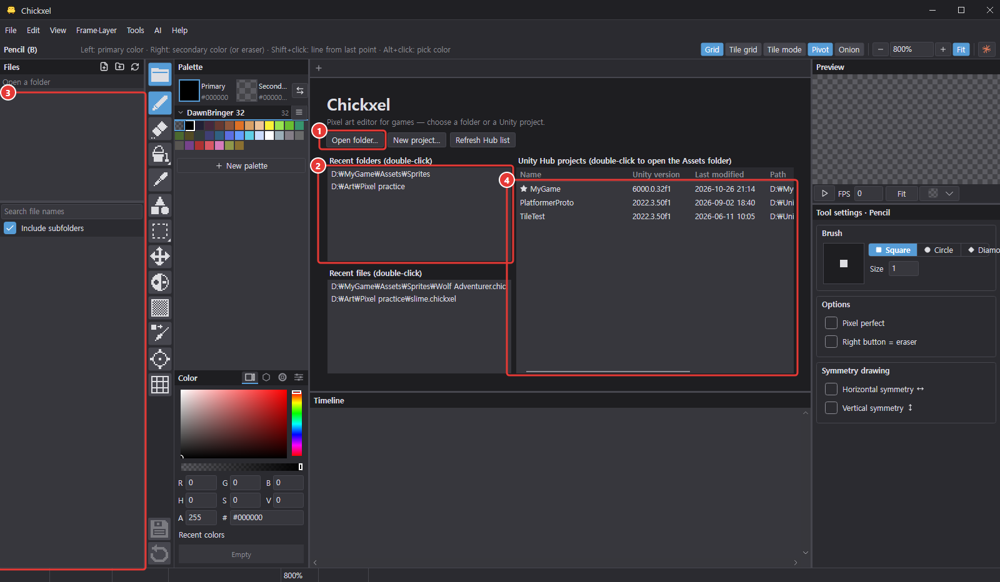
On macOS, read Ctrl in this guide as ⌘ (Command) (e.g. ⌘+S to save). The eyedropper is ⌥+click, and holding ⌘ switches temporarily to the Move tool. Menus and tooltips also show ⌘.
Updates
Gpixel checks for a new version every time it starts. If one is available, the update dialog opens and an ① Update button appears in the top bar.
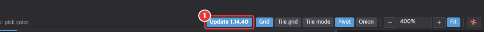
- ② Update now: downloads and verifies the file for your OS, then closes the app, replaces it with the new version and restarts. You're asked about unsaved work first, and if anything fails the previous version stays as it is.
- ③ Later reminds you on the next launch; ④ Don't show until the next update skips that version.
- The dialog shows ⑤ the new and current versions and ⑥ the changes between your version and the new one.
- Check manually any time with ⑦ Help > Check for updates…, and ⑧ turn off automatic checks in Edit > Preferences… > General.
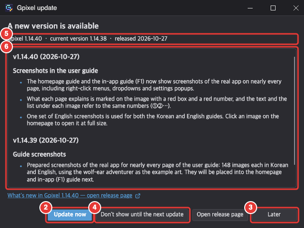
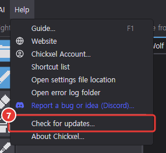
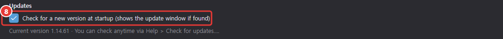
Network and privacy
There are no accounts, analytics or ads, and your images and files are never sent anywhere. The network is used only in these cases:
- ① Check for updates: asks GitHub for the latest version (can be turned off).
- Palette web (Lospec): downloads palette lists and sample images only when you open that window. Favorite palettes are stored only on your computer.
- AI chat: only while you use that window, the Claude Code or Codex CLI installed on your computer connects to Anthropic or OpenAI with your login.
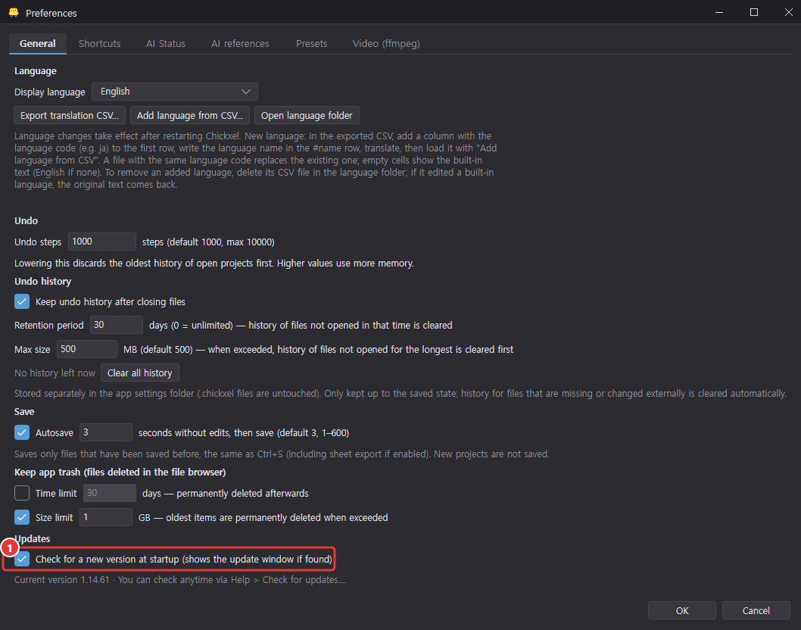
Feedback
Please post bugs, annoyances and feature ideas on the Gpixel Discord. In the app, ① Help > ② Report a bug or idea (Discord)… opens it directly; in the ③ Help > About Gpixel… window, the ④ Discord button does the same. If you have a GitHub account, you can also use GitHub Issues (⑤ Report an issue in the About window).
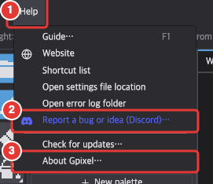
When reporting a bug, including the following helps get it fixed quickly:
- Version: shown in ③ Help > About Gpixel… at ⑥.
- OS: Windows 10/11, or your macOS version (Apple Silicon or Intel).
- Steps: what you did, what happened, and what you expected.
- Error log: if an error dialog appeared, its log file (When errors occur). A screenshot helps too.
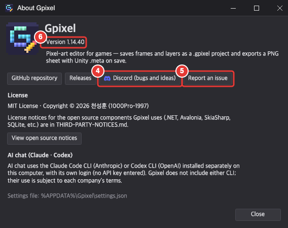
Screen layout
Gpixel's layout is similar to Aseprite. The ① menu and top bar run across the top, the ② toolbar and ③ file browser are on the far left, the ④ palette and ⑤ colors next to them, the ⑥ document tabs and ⑦ canvas in the middle, the ⑧ timeline below, the ⑨ preview and ⑩ tool options on the right, and the ⑪ status bar at the very bottom.
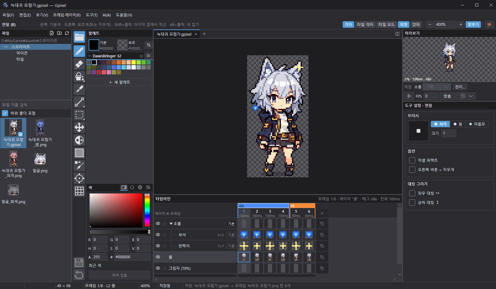
Menu and top bar
The left side of the bar just below the menu shows the current tool's ① name and ② a one-line usage hint. The right side has ③ view options, ④ the zoom level and ⑥ the AI chat button.
- ③ View options: grid, tile grid, tiled mode, pivot, onion (overlay previous/next frames). Right-click a button to open that view's settings popup; changes apply immediately (and turn the view on if it was off).
- ④ Zoom box: click to type a value, drag left/right to change one step at a time, right-click for ⑦ Fit to window and a 100%–6400% list.
- ⑤ Fit toggle: when on, images are fitted to the window each time you open one. Ctrl+0 fits the current view at any time.
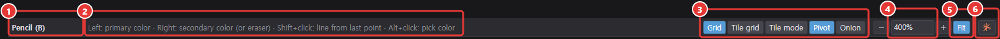
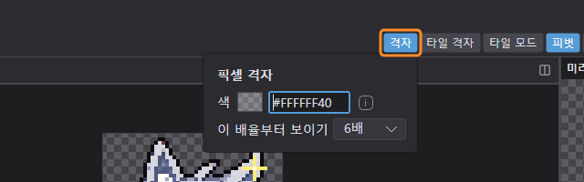
| View | Right-click settings |
|---|---|
| ⑧ Grid | Color (alpha = intensity), zoom at which it appears (2–16×, default 6×) |
| ⑨ Tile grid | Tile width/height (quick picks 8, 16, 32, 64), color |
| ⑩ Tiled mode | Repeat size (auto, 3×3, 5×5, 7×7), dim around the center |
| ⑪ Onion | Number of previous/next frames (0–5), intensity (fainter with distance), tint (previous red, next blue) |
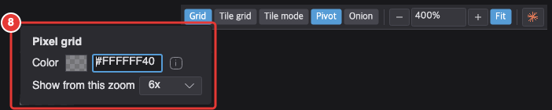
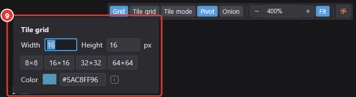
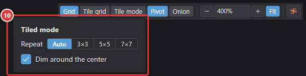
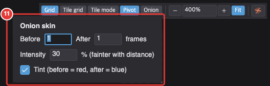
Detailed tool settings are in Tool options on the right.
Number fields and menus
- ① Number fields have no up/down buttons; drag left/right to change the value. Hold Shift to go 10× slower, or Ctrl to change by 10. When you hit the edge of the screen while dragging, the cursor wraps to the other side so you can keep going.
- Click without dragging to type a value. Clicking elsewhere (such as the canvas) after typing confirms it.
- When not typing, right-click a number field to pick from ② a list of common values (the current value is marked with a dot).
- Only one right-click or button menu can be open at a time across the app. It closes when you click outside, scroll, press Esc, switch windows, or press the button that opened it again.
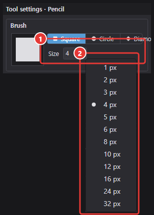
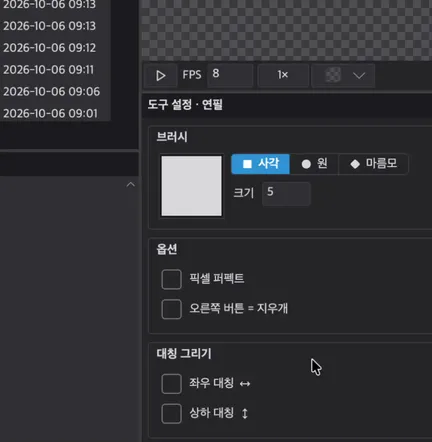
Toolbar
The vertical bar on the far left. Hover an icon to see its shortcut in the tooltip.
- The ① folder button at the top collapses and expands the file browser (F8).
- Similar tools ② share one slot, marked with a small triangle in the bottom-right corner. Long-press or right-click to ③ expand it sideways and switch. See the Tools chapter for each tool.
- At the bottom are ④ Save (same as Ctrl+S) and ⑤ Revert to saved. They're enabled only when there are unsaved changes, and revert is disabled for a new project that has never been saved (see Files).
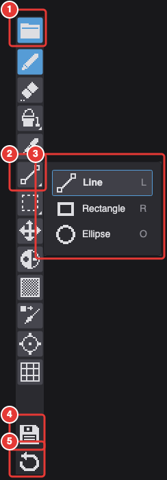
File browser
It has ① a folder tree, ② a thumbnail list of .gpixel and PNG files, ③ search, and ④ an option to include subfolders; changes to files in the folder are picked up automatically. You can also open projects straight from the Unity Hub list. Open folder is Ctrl+Shift+O, Open Unity project is Ctrl+Shift+U.
- ⑤ Three icons on the right of the title row: New pixel file (creates and opens a
.gpixelin the selected folder), New folder, Refresh. .gpixelprojects get ⑥ a blue layer badge in the bottom-right of the thumbnail. PNGs exported by a project (same-name PNG, frame sheet, part atlas) are hidden from the list so only the single.gpixelis shown. Hover it to see the exported file names; searching by those names also finds it.- JPG, BMP, GIF, WebP, APNG, ICO, AVIF and HEIC images and videos (MP4, WebM, MOV, MKV, AVI, …) are listed too (thumbnail = first frame). Videos get a film badge, with a first-frame thumbnail when ffmpeg is available. Clicking one opens it in a new tab as in Opening images, animations and videos.
- A plain click selects and opens one file. Ctrl+click (add/remove one at a time), Shift+click (range), or drag a rectangle over the list to ⑧ select several (multiple selections don't open).
- Press a file and drag it out of the list to the left or right (toward the canvas) to drag the file instead (if the item was already selected, all selected files). Dropping it on the canvas adds it as a new layer.
- ⑨ Right-click menu: new project, merge, rename, show in Explorer/Finder, select image folder, delete, delete
.gpixelfiles only, restore last deleted, view app trash.
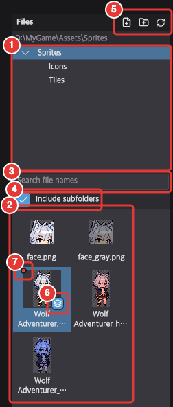
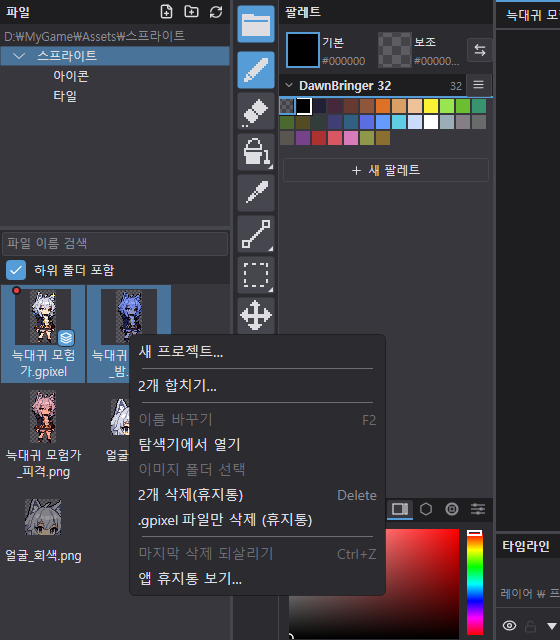
Unsaved changes (red dot)
Every open document lives in a document tab above the canvas, and switching tabs never asks you to save. A document with unsaved changes gets a ⑦ red dot in the top-left of its thumbnail (and next to its tab title); clicking a file that's already open goes to its tab. The status bar shows "N unsaved files".
- Renaming a dotted file keeps track of it; sending it to the trash keeps the tab and marks it modified (saving recreates the file).
- If the file changes outside the app, the current tab asks whether to reload; another tab only notifies you when it has unsaved changes (otherwise it reloads when you select it).
- Only closing the tab of a document with unsaved changes asks Save / Don't save / Cancel.
Merge
Select two or more files and choose Merge… from the right-click menu to combine several images into one .gpixel. In the dialog you set:
- ⑩ Order: drag rows or use the up/down buttons (top = first).
- ⑪ Name: suggested automatically from words common to the file names (e.g.
potato_growing,potato_mature→potato); you can edit it. - ⑫ Mode: see the table below. With As a group, turn on Empty thumbnail to create it with the parts hidden.
- ⑬ Canvas size (default = largest file), anchor (9 directions), delete originals (to the app trash).
| Mode | Result |
|---|---|
| As layers | One layer per file (first file on top) |
| As a group | One group with a part per file (file sizes kept) |
| As skins | One skin per file within a single group (skin name = file name). For tile or item variants swapped in the same spot |
| As frames | Frames appended in file order |
Along with ⑭ a preview (played if there are several frames), ⑮ "How it will look in the timeline" shows the resulting timeline layout, plus notes on what is kept and how. Structure in .gpixel files such as layers, groups, skins, effects and tags is carried over in every mode. The result is saved as <name>.gpixel in the first file's folder and opened right away. If a file with that name already exists, nothing is merged and you're told.
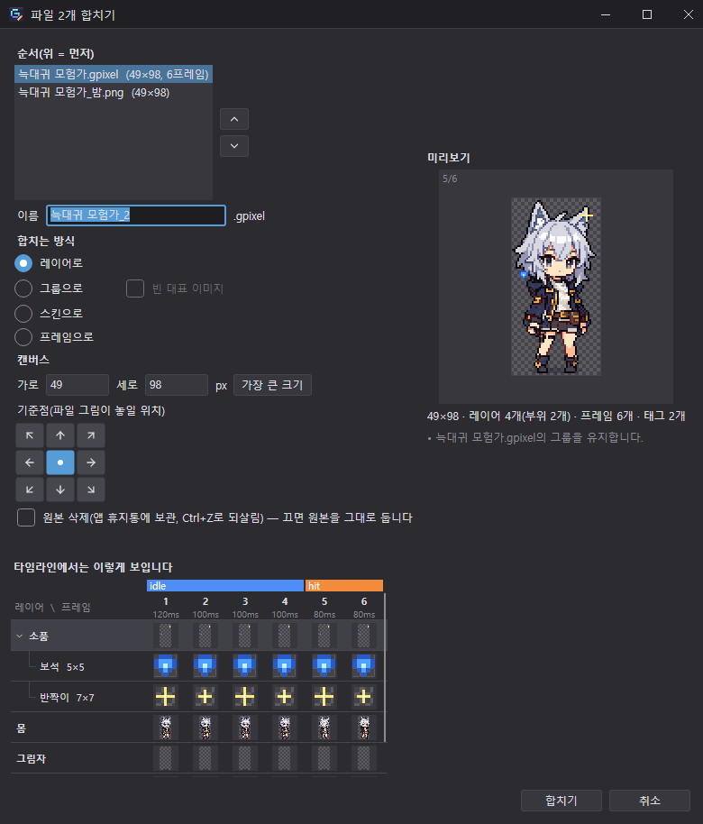
Deleting and the app trash
- Deleted files (Delete, multiple allowed) and originals removed by merging go to the app's own trash without asking (including their PNG and
.metafiles). - Press Ctrl+Z in the file list to restore the last deletion to its original place.
- In View app trash… on the right-click menu, browse ⑯ previews and ⑰ restore (double-click), delete permanently or empty the trash.
- ⑱ Retention policy: Time limit (off by default; when on, items older than N days are permanently deleted) and Size limit (default 1 GB; oldest items are deleted first when exceeded). Change them in the trash window or Edit > Preferences….
- Delete
.gpixelfiles only: sends only the project file to the trash and keeps the exported PNG and.meta. - Select image folder: when viewing with subfolders included, finds and shows the folder that actually contains the file in the tree.
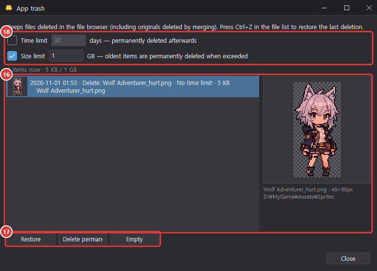
Palette
The ① primary/secondary colors are at the top (the secondary defaults to transparent), and below them you can stack ② multiple palettes (DB32 to begin with). ③ New palette at the bottom adds an empty one.
- ④ Each palette's header has a collapse arrow, its name (double-click to rename), the color count and a menu button.
- ⑧ Menu actions apply to that palette: add current color, remove primary color, sort by hue, load .hex/.gpl, palette web (Lospec), save .hex, create from image, convert to palette colors, rename, move up, move down, clear, delete.
- The palette you last clicked or edited is the active palette (⑤ blue line under the header). Palette features in the Edit menu and the AI palette tools use the active palette.
- The swatch matching the primary color has ⑥ a white border, and the one matching the secondary color ⑦ a blue border. The transparent swatch only appears at the start of the first palette.
- The palette list (names, colors, collapsed state, order) is saved in the settings and kept next time.
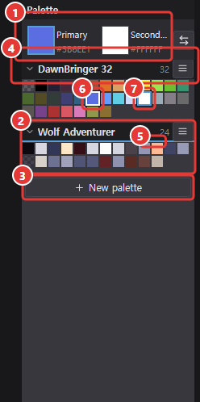
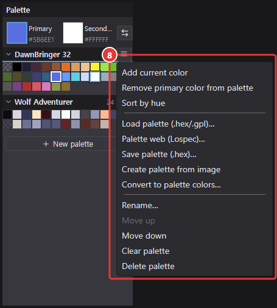
Convert to palette colors
Replaces the colors in the image with the nearest colors in the palette. ⑨ Choose the target from current cel (only inside the selection, if any), all frames of the current layer or all layers and frames (locked layers are skipped), and ⑩ dithering from none (default) or ordered dithering (Bayer 4×4). Dithering mixes two palette colors in light intensity (linear light) and compares the mix with the source in OKLab to set the ratio (e.g. a half black, half white pattern stands for sRGB 188 gray); it is used only when the mix is still closer to the source than the nearest single color after adding how visible the pattern is (lightness difference counts fully, hue and chroma differences half). Colors within a just-noticeable difference (OKLab 0.02) of a palette color are not dithered. ⑪ A before/after preview and ⑫ the change in color count are shown; alpha is kept and fully transparent pixels are left alone. It's a single undo step.
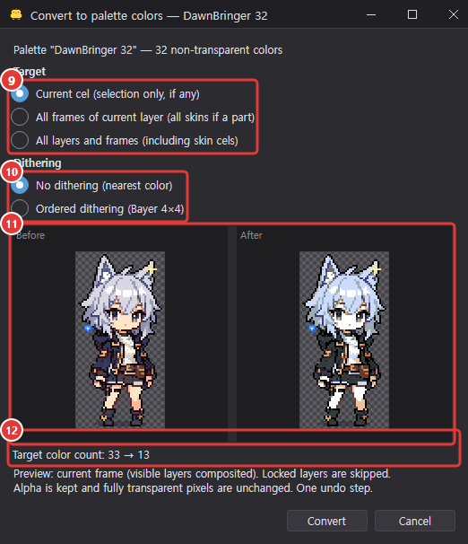
Palette web (Lospec)
Browse the lospec.com palette list inside the app (internet required).
- Filter by sort order (popular, downloads, newest, name), color count and tag (e.g.
gameboy,pico8). Entering a palette name in the tag field shows that palette at the top. - Selecting a palette shows its colors along with example art made with it.
- Use as palette (replaces the current palette; same as double-click), Add to current palette (skips duplicate colors), Save as .hex, View on Lospec.
- Favorites: click the star at the right of a list row or next to the selected palette's name to add or remove it. Favorite palettes, including their example art, are kept on your computer (
<settings folder>/Gpixel/Lospec). - Choose Favorites in the sort box to show only your favorites, most recently added first (no internet needed). The color count and tag/name fields still filter them. If Lospec can't be reached, use View favorites next to the error.
- The last sort you chose is kept the next time you open the window.
Palette copyrights belong to their respective authors.
Color picker
The color picker sits below the palette. It has ① an alpha bar, ② RGB, ③ HSV and ④ alpha (A)/HEX inputs and ⑤ the 16 most recent colors; switch modes with ⑥ the tabs on the right of the "Color" header (remembered in settings).
| Mode | Layout |
|---|---|
| ⑦ Square (default) | Saturation/value box + vertical hue bar |
| ⑧ Honeycomb | 127 hexagonal cells. White in the center, getting more saturated and darker toward the edge, with 13 gray cells below |
| ⑨ Color wheel | Outer ring = hue, inner square = saturation/value |
| ⑩ Sliders | R, G, B, H, S, V bars |
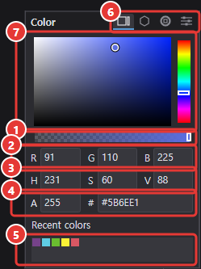
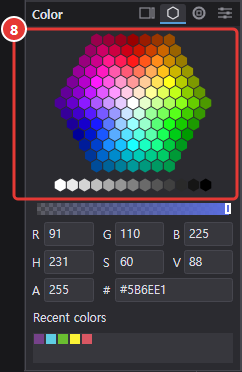
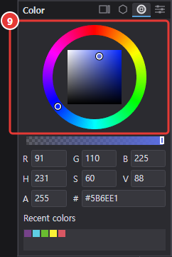
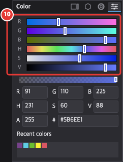
Every mode changes the color you're currently picking (primary or secondary).
Canvas
Shows the current frame (all visible layers combined) and draws onto the current layer's cel.
- Selecting a part layer shows ① only that part at its own size, with ② the rest of the frame shown semi-transparently so you can line things up. Selecting a group layer lets you drag parts to arrange them (see Part (group) layers).
- Supports 1–64× integer zoom, ③ checkerboard background, ④ pixel/⑤ tile grids, ⑩ tiled mode (for seamless patterns), ⑥ symmetry guides, ⑦ pivot, ⑧ selection and ⑨ onion skin.
- Hold H to peek at the previous frame.
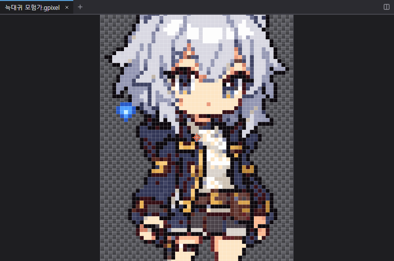
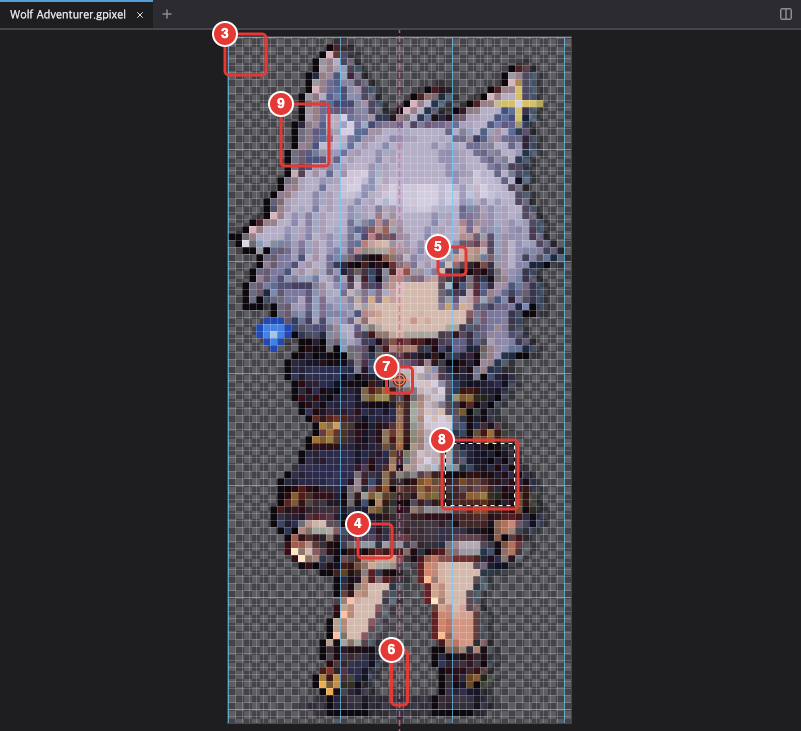
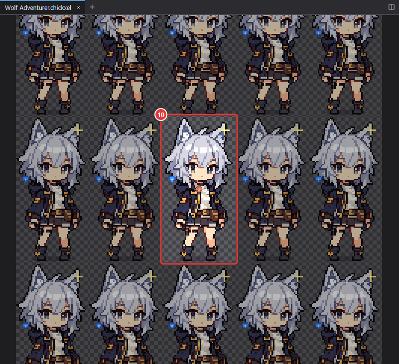
Document tabs and split view
The tab strip above the canvas has one tab per open document (① title = file name, ② a red dot for unsaved changes, ③ full path on hover). Clicking a file in the file browser opens it in a new tab; if it's already open (even in the other pane), it isn't opened again — its tab is selected and that pane gets focus. A document is open in only one tab. Open, recent files, New project and AI tools also open new tabs.
- Clicking a tab switches documents; the timeline, preview, layers, undo history (per document), window title and status bar follow. Zoom, position, current frame, layer and selection are remembered per tab.
- Close with the tab's ④ X, a middle click or Ctrl+W. The ⑤ + at the end of the strip creates a new project in a new tab.
- Closing every tab shows the start screen below the tab strip. Only + remains on the strip, so you can create a new project in a new tab.
- Drag tabs left and right to reorder them; Ctrl+Tab / Ctrl+Shift+Tab cycle through them. ⑥ Right-click = Close, Close other tabs, Move to the other pane.
- Move to the other pane (tab right-click, ⑦ the move button at the right end of the strip, the View menu) or dragging a tab to the right edge of the canvas moves that tab into ⑧ a right pane, splitting the canvas into left and right panes, each with its own tab strip. Once split, the same actions move tabs between panes. A pane's only tab isn't moved.
- The focused pane (⑨ accent line under its tab strip) is the one the timeline, preview and panels work on; clicking the other pane focuses it. Closing the last tab of a pane removes the split.
- Tabs open when you quit (including the split and order) are reopened next time; missing files and never-saved new documents are skipped.
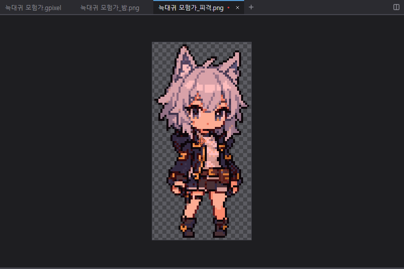
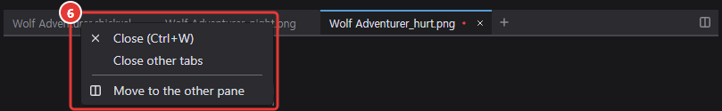
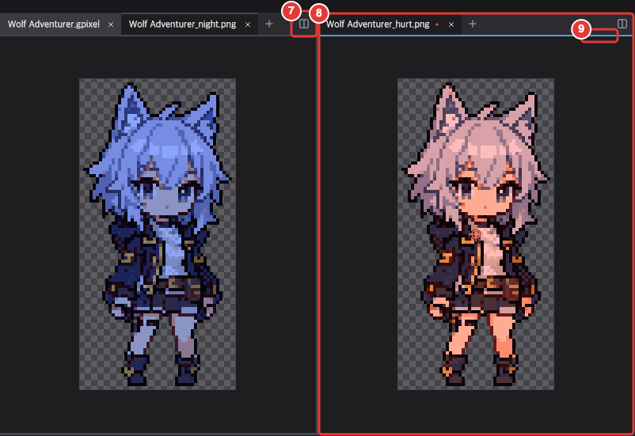
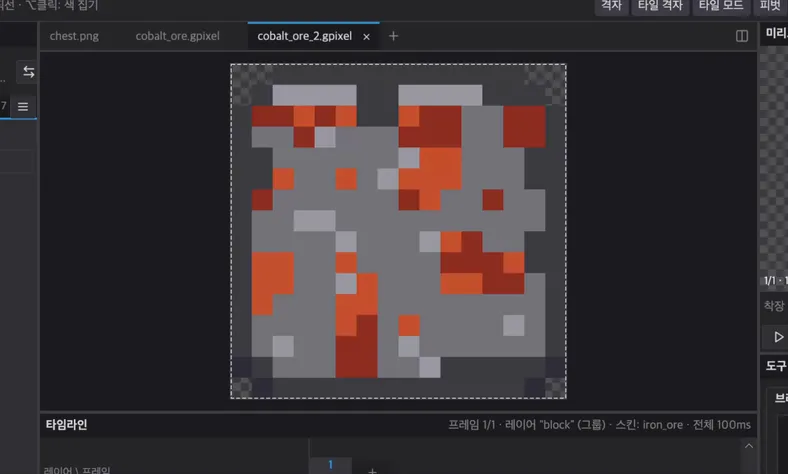
Timeline
At the bottom of the screen: rows are layers, columns are frames and the strip at the top shows tags.
- Layer rows: ① eye (visibility) and ② lock icons, ③ opacity, name. Groups collapse and expand with a ④ triangle, and their ⑤ parts appear indented below.
- Frame columns: ⑥ number, duration, ⑦ live thumbnail. Double-click the number to change the frame duration.
- ⑧ Tag strip: colored brackets show groups of frames.
- Column after the last frame: the ⑨ plus icon in the header = add an empty frame; the ⑩ copy icon below = add a copy of the last frame.
- Row below the last layer: the whole name cell is a ⑪ plus button = add an empty layer at the bottom; the whole frame area is one ⑫ copy button (icon every 10 frames) = add a copy of the bottom layer at the bottom (a group comes with its parts).
- While the preview plays, the frame column being shown gets a ⑬ green outline.
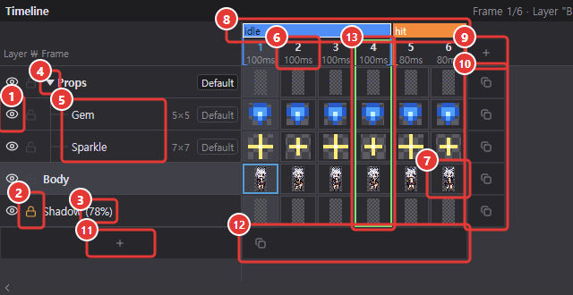
There are no separate tool buttons; everything is in the right-click menu. The top of the menu shows ⑭ what's selected (e.g. "Frames 1–3 selected").
| Where you right-click | Main menu items |
|---|---|
| ⑮ Frame header | Create tag; empty frame, duplicate, delete, move, duration; copy, cut, paste frames; pivot, cell name |
| ⑯ Cel | Clear cels, copy image from previous frame, copy, cut, paste cels, add effect, tag, empty frame, duplicate, duration, pivot, cell name |
| ⑰ Layer name | Name, opacity, effects, visibility, lock, part size, position; new layer, group, part; duplicate, order, merge, delete |
| ⑱ Empty area (such as the top-left cell) | Create new |
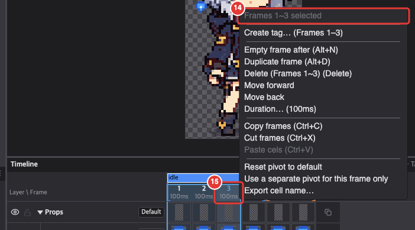
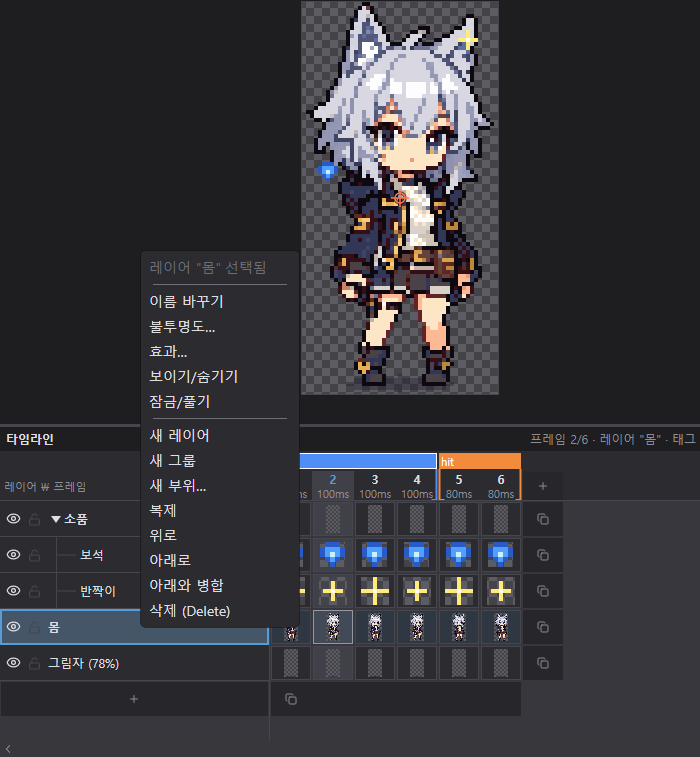
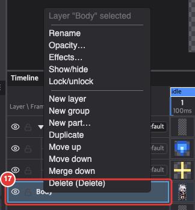
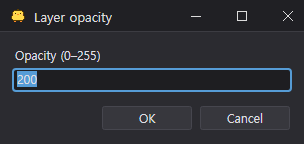
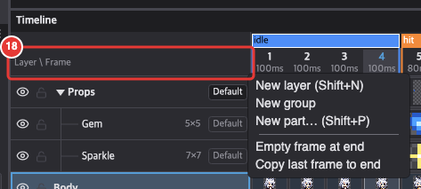
Selecting in the timeline
You select one kind of thing at a time (frames, layers or cels). What you click becomes the current frame/layer.
- Click a ① frame header to select that frame, a layer name for that layer, or a ② cel for that cell; the selection gets a blue border.
- Drag to select everything the rectangle touches. Shift+click = extend to a range, Ctrl+click = add/remove one at a time.
- Arrow keys (after clicking the timeline): ←→ = adjacent frame, ↑↓ = adjacent layer. Shift+arrow extends the selection.
- Icons such as the eye, lock, collapse triangle and fx only do their own job and don't select. Click an empty area to clear the selection.
- The ③ status bar shows what's selected and what Delete will do.
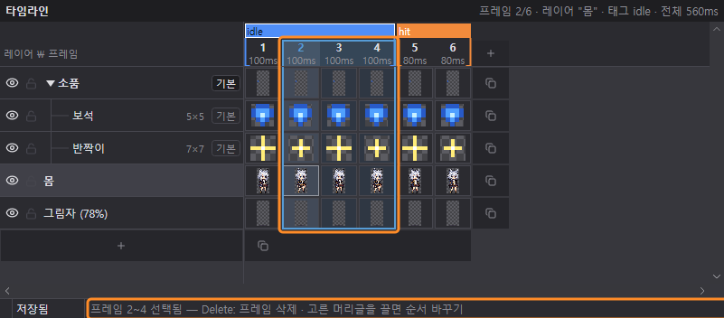
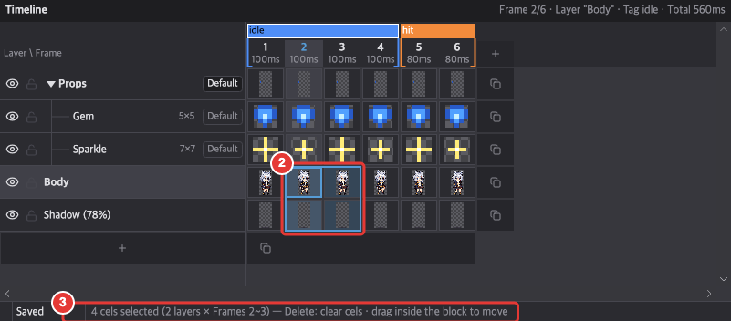
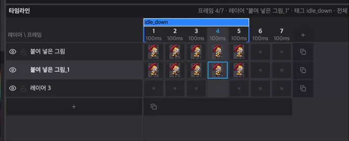
Editing the timeline
| To do this | How |
|---|---|
| Delete | Select, then Delete. Frames → delete frames, layers → delete layers (groups include their parts), cels → clear the image only. You can't delete every frame or layer. |
| Reorder | Drag an already selected frame header or layer name. Other columns/rows move aside to make room; Esc cancels. Parts move only within the same group. |
| Move or copy a block of cels | ① Select several cells, then click inside and drag to move; hold Ctrl (or Alt) when dropping to copy. Cels can't move to rows of a different size or type. |
| Copy and paste | Ctrl+C (or X), then Ctrl+V (or ② copy, cut, paste in the right-click menu). Cels overwrite the same shape with the clicked cell as top-left, frames are pasted as new frames after the selected frame, and layers as new layers above the original. |
| Bring in the previous frame's image | Right-click an ③ empty cel → ④ "Copy image from previous frame" |
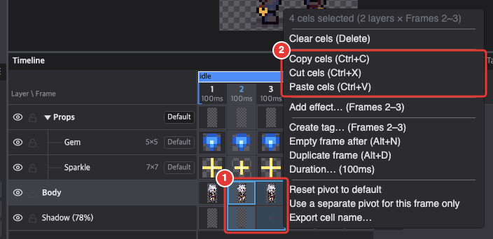
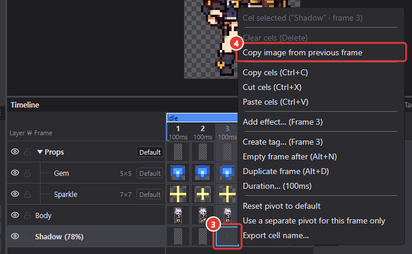
New layers created by copying get their trailing number increased by 1 (item_1 → item_2, tile_009 → tile_010, or _1 if there's no number). Duplicate in the layer menu follows the same rule. Every edit is a single undo step.
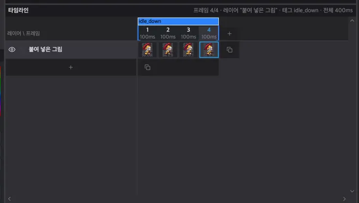
Tags
- ① Select a range of frames and choose ② Create tag from the right-click menu. In the dialog, set the ③ name, ④ frame range, ⑤ playback direction and loop, and ⑥ color.
- Hover near either inner end of a ⑦ tag box until the cursor becomes
↔, then drag to change the range. - Right-click a tag for the ⑧ menu with Tag properties… (the same dialog as when creating; double-clicking the tag also opens it), Play this tag and Delete.
- Select a tag and play the preview to loop within that tag.
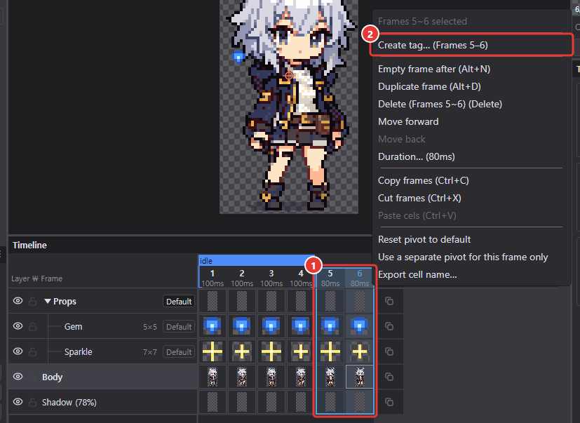
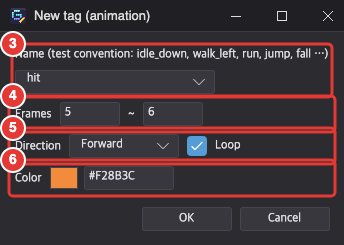
Layer effects
Layer effects are non-destructive: they're applied only when displayed, without changing cel pixels. They automatically apply to anything you draw later and are all rendered per pixel (no blur or anti-aliasing).
- Right-click a layer name and choose ① Effects… to open the effects dialog. Layers with effects show ② fx on the right of the name.
- Normal layers and parts apply effects to their cel; groups apply them to the combined shape of their parts. For example, a group outline is drawn as a single line around the whole character.
- Effects stack from the top of the list down (outline → shadow means the shadow includes the outline) and can be toggled individually.
- Each effect has a frame range ("All frames" or a start–end frame).
Effect types
| Effect | What it does |
|---|---|
| Outline | 1–3px thick, 4 or 8 directions, outside or inside. Color mode: a fixed color, or Shade from neighbors (each line pixel is the touching sprite pixel's color made darker or lighter by Shade −100 to +100% — dark blue next to blue, dark grey next to grey). Turn on Hide original (outline only) to erase the sprite and keep just the line (inside: only the edge ring). Effects clipped to this outline apply to the line only |
| Shadow | Places a copy of the image's shape behind it, offset by X/Y. Dither (25%, 50%, 75%) gives pixel-art style shadows |
| Edge light and shade | Light color on the edges facing the light (8 directions), shade color on the opposite side |
| Color overlay | Blends a solid color or gradient with normal, multiply or screen. The gradient's "Whole sprite, one color (over time)" mode shifts the whole image through the stop colors over the effect range, with speed and ping-pong settings (formerly the gradient map effect) |
| Inner glow | Blends a color from the edge inward by 1–8px |
| Color replace (palette swap) | A list of "from color → to color" pairs. For turning red clothes blue without changing the cel |
| Hue adjust | Grayscale, sepia, hue shift, brightness/contrast, saturation |
| Reflection | Places a flipped copy below (floor/water), above (ceiling), left or right (wall). Height (width for sides), opacity, dither, tint, ripple |
The following are animated effects that change over their frame range. A longer range makes them slower and a shorter one faster. They all share Speed (fast start, constant, slow start, slow start and end) and Loop (once, repeat N times, ping-pong N times).
| Effect | What it does |
|---|---|
| Explode | Pixels burst outward in pieces and vanish. Distance, center, randomness, gravity, piece size, flash, seed |
| Light sweep | A band of light sweeps diagonally across the image (the glint on coins or buttons) |
| Squash and stretch | Wobbles like jelly, then returns to its original shape |
| Hit flash | Flashes a single color (white, red, etc.) 1–8 times |
| Blink | Repeatedly shows and hides (invincibility frames). Fully transparent, semi-transparent or dither 50% |
| Shake | Shakes horizontally, vertically or both by whole pixels |
| Bob | Smoothly floats up and down (floating items). Start and end connect seamlessly |
| Appear / disappear | Opacity, dither, wipe (from top, bottom, left or right), pixel scatter |
| Fade in/out | Changes the whole image's opacity between 0 and the original |
| Melt | Each column drips downward and disappears (stretch or vanish) |
| Rotate | Rotates around an anchor (pivot, center, bottom center). Uses RotSprite so pixel lines break less |
| Afterimage | Places previous frames' images behind, gradually fainter (count, spacing, tint) |
| Color cycle | Rotates through the colors in a list (water, fire, neon) |
| Shockwave ring | A pixel ring spreads out from the center |
| Hologram | Single-color shaded image + scanlines, bright band, flicker, glitch, edge glow |
Effect colors and clipping
- Clicking a ③ color swatch opens a popup with the same square, honeycomb, color wheel and slider modes as the main color editor, plus the palette, recent colors and an eyedropper; the canvas updates as you pick.
- Each color setting can be a ④ solid color / gradient. For gradients, choose static / animated (the band moves or rotates over the range) for each of linear, radial, square and angular, and set the direction, count and angle. Stop editing, the Color space (RGB / HSL / OKLab / OKLCH; new gradients use OKLCH) and the right-click presets on the bar work as in the gradient tool; picking a preset in an effect also applies its shape, angle, direction, repeat and animation.
- Turn on ⑤ Apply to → Clip to effect above to apply only to pixels changed by the previous effect. Example: clipping a
Color overlayunder anOutlinegives a gradient outline.
Effects dialog
- The ⑥ Effect types list on the left shows previews of each effect applied to the current image. Double-click to add one at the end of the list, or drag it into the effect list to add it at that position. In the Built-in / ⑦ Custom tabs, ⑮ Save all effects saves a named effect bundle for reuse.
- Middle: ⑧ Add range, ⑨ the effect list (checkbox = on; delete, move up, move down, apply permanently) and ⑩ the selected effect's settings.
- Right: a ⑪ before/after preview of the current frame with play/pause. Click it to view it in a large window. In the ⑫ frame strip below, click a cell to view that frame or drag to set the frame range.
- ⑬ Expand canvas to fit effects (on by default): enlarges the canvas when effects extend beyond it. Choose minimal, keep ratio, or keep center (default).
- ⑭ Extend frames: increases the number of frames in the effect's range (e.g. a 12-frame explosion on a 4-frame animation). Methods: with original frames, same ratio, first frame, last frame, repeat. Dragging the end of the range past the last cell in the frame strip also extends it.
- Hover the i marks for explanations in tooltips.
Effect rows in the timeline
Like a video editor, ⑯ each effect gets a thin row under its layer, and the effect appears as a ⑰ rounded box spanning the frames it applies to. Click fx (②) in the layer name cell to collapse or expand the effect rows.
- Select cells to add an effect: select cels and choose ⑱ Add effect… from the right-click menu to open the effects dialog with Add range filled in with that frame range.
- Drag either end of a box to change its range, or drag the body to move the whole range. Double-click a box to open the effects dialog.
- Drag an effect name up or down to reorder it, or drop it on another layer's row to move it to that layer. Select and press Delete to delete, Ctrl+C/V to copy.
- ⑲ Box right-click menu: effect settings, to all frames, this frame only, from this frame to end, from start to this frame, on/off, delete, apply effect permanently, copy, paste. Empty cells outside a box also offer ⑳ Extend to here and Add copies from here.
- Effect ranges follow frame numbers just like tags. Inserting frames inside a range extends it, and deleting all frames in a range deletes the effect too.
Applying permanently and where effects show
- Apply effect permanently bakes the effect into the cel pixels and removes it from the list (you can then edit it like any drawing). Enabled effects above the selected one are baked too, so the result looks exactly as it did. Group effects and locked layers can't be applied permanently.
- Duplicating a layer also copies its effects, and Merge down bakes the upper layer's effects.
- Effects are shown on the canvas, preview, frame sheets and thumbnails. The drawing view for a selected part shows the plain image without effects.
- The part atlas includes only the part's own effects; spreading effects such as outlines or shadows make the sprite wider by that amount (the pivot is shifted so it points at the same spot).
Preview
In the top right; ① plays the current tag (or all frames if there's none) in real time.
- ② It has its own FPS.
- ③ Zoom button: click to cycle fit → 1× → 2× → 4×; right-click to go in reverse.
- ④ Background: checker, black, white, gray, green, custom color (⑥ list).
- ⑤ Right-click menu (on the image): Copy image puts the shown frame on the clipboard as a PNG with transparency and without the preview background, and Copy enlarged (×4) copies it four times larger with sharp pixels (handy for pasting into chats such as Discord). Save frame… saves that frame as a PNG (
<document>_<frame number>.png), and Save as GIF… opens the Export as animated GIF window. While playing, the frame shown when you right-click is used, so you don't need to pause.
Export dialog
Open it with Ctrl+E or File > Export…. Settings apply as soon as you change them (one undo step per setting), and the blue ① Export button at the bottom closes the dialog and exports. If export on save is on, Ctrl+S alone exports too. There are two tabs: ② Export and ③ Import Settings.
- ④ Left = settings, ⑤ right = output preview (sheet and cell name list per file). Drag ⑥ the divider to split the width; the dialog size and collapsed sections are remembered.
- The frame sheet and part atlas share the same sheet settings. Turn on ⑪ Advanced > Per sheet to keep separate settings for the part atlas.
| Section | Main settings |
|---|---|
| ⑦ Common | Output (frame sheet, part atlas, both), skins (current outfit, chosen skins), skin packing, layout (grid, auto layout), sort order, cell count, separate files, cell names, spacing between cells, trim borders, power of two |
| ⑧ Files | Export on save, folder, file format (PNG/JPG/TGA/BMP), Unity .meta (off, auto, always) |
| ⑨ Frame sheet | Name, Single frame, path |
| ⑩ Part atlas | Name, keep original positions, Sprite Library, path |
| ⑪ Advanced | Per sheet |
- ⑫ Cell count: auto (smallest sheet), N columns, N rows.
- ⑬ Sort order: drag the part, skin, tag and frame rows or use Alt+↑/↓ to reorder them, and use New row here between rows to set where lines break. Sorting changes only positions; cell names stay the same.
- ⑭ Separate files: split files per tag, per part or per skin (can be combined).
- ⑮ Cell names: Frame number or By tag (default for new projects). They're used as sprite names in Unity
.meta, so changing them shows a warning. - ⑯ Choose skins…: choose skins to export, outfit presets and layers to include in the composite.
- ⑰ Preset (far right of the tab row): saves the current settings under a name in the app settings so you can load them in other projects. Includes built-in presets ("Frame sheet (default)", "Part atlas + Sprite Library", "Separate file per skin"), reset to defaults, rename, overwrite, delete, and JSON export/import. Per-project values such as file names and folders aren't included.
- ⑱ Import Settings tab (shown only when writing
.meta): sets the same names and values as Unity's Texture Importer (Sprite Mode, Pixels Per Unit, Mesh Type, Pivot, Filter Mode, Compression, etc.). Defaults suit pixel art (Point, no compression, mipmaps off, Clamp).
See also the Files chapter for saving and Unity integration.
Export as animated GIF
File > Export as animated GIF… creates a single GIF for sharing. The project isn't changed.
- ① Range: current tag, all frames, ⑦ choose a tag.
- ② Zoom: 1–10× (default = the zoom that makes the result about 256px).
- ③ Loop: loop forever or play N times.
- ④ Background: transparent (alpha below 50% becomes transparent) or composited over a background color.
⑤ The preview on the right plays with the actual frame durations and ⑥ shows the output size, frame count, duration and color count. With 255 colors or fewer it's saved losslessly. The default location is <project>.gif next to the project (<project>_<tag>.gif for a tag). You can assign a shortcut in Preferences > Shortcuts.
Tool options
Below the preview on the right. ① The title row shows the selected tool's name (e.g. Tool settings · Pencil) and ② only that tool's settings appear. Tool settings aren't part of undo and are kept for the next launch. Per-tool details are in the Tools chapter.
Pivot (Pivot tool K)
- ③ Shows the pivot of the drawing target (the part if one is selected, otherwise the frame) in pixels.
- The ④ 5×5 buttons pick 0, 1/4, 1/2, 3/4 or end positions horizontally and vertically.
- ⑤ Enter X (from the left) and Y (from the bottom, as in Unity) in 0.5px steps.
- ⑥ Turn on "Current frame only" to use a per-frame pivot.
Status bar
The very bottom of the screen shows ① the cursor coordinates, ② color, ③ canvas size (part size for parts), ④ frame/layer, ⑤ zoom and ⑥ save state. ⑦ Hints such as what's selected in the timeline or the number of unsaved files also appear here.
Tools
Tool list
When you select a tool in the ① toolbar, its settings appear in ② Tool options in the right dock. Long explanations live in i icon tooltips so they don't take up space: usage hints for Rectangle select, Ellipse select, Lasso select, Magic wand, Move and Gradient sit next to the Tool settings · … title, and the explanations of the canvas size, transform, gradient, 9-slice and eyedropper groups sit next to each group title. Hover the i to read them.
| Tool | Shortcut | What it does |
|---|---|---|
| ③ Pencil | B | Paints pixels. Supports pixel perfect (P, at size 1) and symmetry |
| ④ Eraser | E | Erases pixels |
| ⑤ Fill | G | Fills an area of the same (or similar) color |
| ⑤ Gradient | F | Drag to paint a linear gradient |
| ⑥ Eyedropper | I, Alt+click | Picks a color from the canvas |
| ⑦ Line / Rectangle / Circle | L / R / O | Draws shapes. Rectangles and circles can be filled (U) |
| ⑧ Rectangle select / Ellipse select | M | Drag to select an area |
| ⑧ Lasso select | Q | Draw an outline to select |
| ⑧ Magic wand | W | Selects an area of similar color |
| ⑨ Move | V | Moves the selection. With no selection it shifts the whole cel; has a wrap around option |
| ⑩ Lighten/darken | D | Changes the brightness where you brush |
| ⑪ Dithering | T | Paints by mixing primary and secondary colors in a pattern |
| ⑫ Color replace brush | C | Replaces colors where you brush |
| ⑬ Pivot | K | Sets the pivot |
| ⑭ 9-slice | S | Sets the Unity sprite border |
Whatever tool you're using, holding Ctrl over the canvas temporarily switches to the Move tool, and releasing it returns to the original tool. In drawing tools, holding Alt temporarily switches to the eyedropper.
Drawing basics
- Left button = ① primary color, right button = ② secondary color (or eraser, depending on ③ options).
- Pressing the other button mid-stroke cancels that stroke.
- ④ Shift+click = straight line from the last point. While drawing shapes, Shift = 45° steps, perfect squares and circles.
- The Edit menu has ⑤ add outline, ⑥ replace color, ⑦ flip/rotate and ⑧ canvas size.
Tool groups
Similar tools share one toolbar slot: ① Fill (fill, gradient), ② Shapes (line, rectangle, circle) and ③ Select (rectangle, ellipse, lasso, magic wand). Group slots have a small triangle in the bottom-right corner.
- A plain click selects the tool shown in the slot.
- Long-press or right-click to expand ④ the list of tools in the group.
Brush settings
Shared by the pencil, eraser, lighten/darken, dithering and color replace brush.
- Shape: ① Square / Circle / Diamond. ② A preview of the actual pixel shape appears beside it.
- ③ Size 1–32: drag the number field left/right or use [ / ].
- ④ Line thickness and pen shape for lines, rectangles and circles are set the same way.
- Lighten/darken has ⑤ Strength 1–50% (default 10%); Dithering has a ⑥ Pattern: checker (50%) / sparse (25%) / dense (75%).
Selection tools
All four selection tools create the same kind of selection. Once you have one, cut, copy, delete, flip, rotate, move, outline and replace color apply only inside it, and drawing is limited to it as well.
- ① Rectangle / Ellipse select: drag to select (Shift = square/circle). Drag inside the selection to move its contents, and press Enter to drop.
- ② Lasso select: draw an outline and release; it closes back to the starting point. The area to be selected is shown with a blue dotted line while dragging.
- ③ Magic wand: selects the area of similar color to where you click. ④ Settings are the same as Fill. To move it, use Move (V) or the arrow keys.
- Right-click the canvas with a selection tool or press Ctrl+D = deselect.
- Pressing M repeatedly cycles rectangle → ellipse → lasso → magic wand.
Fill
- ① Tolerance 0–100%: 0 fills only the exact same color; higher values include similar colors.
- ② Contiguous only: when off, fills every matching color (Shift+G).
- ③ Connect diagonally too: connects areas in 8 directions.
- ④ Source: current layer / all visible layers (the area is determined from the composite, but paint goes on the current layer). ⑤ The eyedropper has the same source setting.
Gradient
Drag on the canvas from the ① start point to the ② end point to paint in that direction (Shift = 45° steps). With a selection it paints only inside it; otherwise the whole cel.
- ③ Gradient bar: opacity stops sit above the bar and color stops below. Click an empty spot to add a stop, drag to move it and press Delete to remove it.
- You can edit the selected stop's ④ position % and ⑤ color (or opacity %).
- ⑥ Interpolation: smooth / steps. ⑦ Color space: the space smooth blending runs in, RGB / HSL / OKLab / OKLCH. New gradients default to OKLCH; older settings and projects without a color space load as RGB. It applies to both the preview and the painting; steps and Bayer dithering still use only the stop colors. ⑧ Dithering: none / 2×2 Bayer / 4×4 Bayer (for pixel art that mixes with patterns instead of semi-transparency).
- Settings are kept for the next launch. Usage hints such as how to drag are in the ⑨ i icon next to the Tool settings title; hover it to read them.
- Right-click the bar for the preset menu: ⑩ Save current gradient… saves the current settings under a name, and picking one of the ⑪ saved presets (a gradient preview under each name; favorites come first) applies it right away. A preset stores the color and opacity stops, interpolation, color space and dithering; picked in a layer effect's color gradient editor it also applies the shape, angle, direction, repeat and animation.
- The built-in presets are Rainbow, Repeating Rainbow (red at both ends), Sunset, Ocean, Transparent Fade, Fire, Forest and Grayscale. Deleted or edited built-ins can be restored on the Presets tab of Preferences.
- ⑫ Manage Gradient Presets… (or Tools > Presets…) opens the Gradients tab of the Presets window. ⑬ Pick a preset from the list and ⑭ add it to favorites, rename or delete it, or ⑮ edit its stops and settings on the right while watching the preview, then press ⑯ Save changes. The Auto optimize (Pixelate) tab of the same window manages auto optimize presets.
Transform mode (rotate/size)
Ctrl+T or Transform (rotate/size)… in the Edit menu. Rotate, scale and move the selection (or, with none, all painted pixels in the current cel) using the handles on the orange dotted border.
| Action | Result |
|---|---|
| ① Drag inside, arrow keys | Move (1-pixel steps) |
| ② Drag one of the 8 square handles | Resize (Shift = keep ratio, Alt = from center; dragging past the opposite side flips) |
| ③ Drag just outside the border | Rotate (Shift = 15° steps) |
| ④ Drag / double-click the orange rotation center | Move the rotation center / reset to center |
| Enter or ⑤ Apply | Apply (one undo step) |
| Esc, Ctrl+Z or ⑥ Cancel | Back to before the transform |
- You can also enter ⑦ the angle, width/height % and center X/Y as numbers in Tool options.
- ⑧ Resampling: RotSprite (default; rotated lines break less and no new colors are created) / Nearest.
- Dragging repeatedly always redraws from the original, so it doesn't get mushy. Doing something else, such as switching tools or saving, applies it first.
- Transforming several cels at once: select ⑨ several cels in the timeline (for example frames 1–6 of one layer; frame-header and layer-name selections work too) and press Ctrl+T — every selected cel gets the same rotation, scale and move. ⑩ The handle box surrounds the drawings of all those cels, the canvas shows the current cel moving, and the other cels change when you apply (one undo step; Esc cancels them all). Empty cels and cels on locked layers are skipped. Dragging with the Move tool or nudging with the arrow keys also moves all selected cels together. ⑪ The status bar shows how many cels are transforming together.
Canvas size mode
Ctrl+Alt+C or Canvas size… in the Edit menu. Set the new size and image position right on the canvas instead of in a dialog. The canvas border is a ① light-blue dotted line and ② areas to be cropped are dimmed.
| Action | Result |
|---|---|
| ③ Drag a handle | Moves only that canvas edge (adds margin or crops the image) |
| Ctrl+drag a handle | Also resizes the image (Ctrl+Shift = keep ratio). With Stretch with 9-slice on, the image is stretched or shrunk with 9-slice |
| ④ Drag inside the image, arrow keys | Move the image within the canvas |
| Enter or ⑤ OK | Apply (one undo step) |
| Esc, Ctrl+Z or ⑥ Cancel | Exit without changes |
- Tool options: ⑦ canvas width/height, ⑧ Anchor at canvas center, ⑨ Stretch with 9-slice and the middle fill (Stretch / Tile), ⑩ image width/height %, ⑪ Keep image ratio, ⑫ image position X/Y, ⑬ 9-direction anchor.
- Applies to all frames and layers; parts and pivots are adjusted as well.
Stretch with 9-slice
- When the frame (or a part) has 9-slice borders, ⑨ Stretch with 9-slice is on by default. The controls are the same as in the table above (plain drag = margin, Ctrl+drag or image width/height = image size); when the image is resized, corners stay as they are, edges stretch in one direction only and only the middle grows, like a Unity UI image with Image Type = Sliced. When it's off or there are no borders, the whole image is scaled nearest-neighbor.
- Middle fill: Stretch = nearest-neighbor stretch or shrink (Unity Sliced), Tile = repeat the original pattern at its size (Unity Tiled — good for patterned middles).
- While dragging, the borders are shown as green dotted lines, and the image can't get smaller than both borders plus one pixel.
- After applying, the L, T, R and B values stay the same number of pixels from the image edges (plus any margin you left), so the Unity Sprite Border still matches. Parts with their own borders are stretched with those, and pivots follow the same mapping.
9-slice
Sets the Unity Sprite Border. ① Four green lines appear on the canvas; drag them to change ② the L, T, R and B values. In Tool options you can enter numbers or reset with ③ All 0.
With a part selected it applies to that part; otherwise to every cell of the frame sheet (④ Tool options shows the target). When scaled up, everything outside the lines (corners and edges) stays the same and only the center stretches, which suits UI buttons and panels used with Image Type = Sliced in Unity. You can resize the image the same way inside Gpixel with Stretch with 9-slice in canvas size mode.
Files · saving · export
File types
| File | Role |
|---|---|
.gpixel | The editable source. Layers, effects, frames, tags, parts, skins, outfit presets and export settings are all stored only here. |
| Exported images (PNG) | The output, used in Unity or other programs. |
.meta | Unity settings (sprite cells, pivot, etc.). |
.spriteLib | Unity Sprite Library. Created only when turned on (see Parts · skins). |
Saving
Saving the .gpixel with Ctrl+S (① File > Save (+ export sheets)) also exports the image and .meta, depending on your settings, and ② the status bar shows the result. A .meta is created when the file is inside a Unity project's Assets or already has a meta. Existing guids and spriteIDs are kept by name, so references on the Unity side don't break.
If the .gpixel was saved but only the image export failed (for example because another program has the file open), ③ you're told about it.
Autosave
On by default. After 3 seconds without edits, it saves without asking, just like Ctrl+S (including export), and shows Autosaved in ① the status bar.
- It waits while you're drawing, dragging, transforming or while the AI is working.
- It only saves files that already have a
.gpixelon disk. New projects and imported PNGs must be saved manually once. - ② Turn it on/off and change ③ the wait time (1–600 seconds) in Preferences > General.
Revert to saved
① The button at the bottom of the toolbar or ② File > Revert to saved discards unsaved changes after ③ confirmation and reopens the file. The current layer, frame and zoom stay the same. The revert itself can't be undone.
Undo history that survives closing
On by default: even after closing a file or quitting the app, you can keep using undo and redo when you reopen it. History is kept only up to the saved state; changes discarded with "Don't save" aren't kept. The history is stored separately in the app settings folder, not in the .gpixel.
① Turning it on/off, ② retention period (default 30 days), ③ maximum size (default 500 MB) and ④ Clear all history are in Preferences > General.
Opening (importing) PNGs
Opening a PNG imports it as a project. If a .gpixel with the same name exists, or a project in the same folder exports that PNG, that project opens instead.
- If the meta contains cell information and the cells differ in size, it's imported as parts (one group + one part per cell).
- If all cells are the same size, you're asked to choose "① As parts / ② As animation frames".
- Sheets without cell information can be split with ③ Frame·Layer > Split into frames by grid: ④ pick the method and split by ⑤ cell size, ⑥ cell count or ⑦ automatically (by blobs).
Opening images, animations and videos
① File > Open (.gpixel · image · GIF · video)… (Ctrl+O) lets you pick several files at once and opens each in ② its own tab. Images other than PNG (JPG, BMP, GIF, WebP, ICO, animated PNG) become a new document: canvas = image size, ③ one layer named after the file, ④ one frame per image frame.
- Frame durations come from the file (0–10 ms become 100 ms, like browsers). Transparency is kept, and partial GIF/APNG frames with their disposal (restore to background / previous) are composited so every frame is a complete picture. Photos follow their EXIF rotation.
- Files with more than 300 frames ask ⑤ "Open all / First 300 only / Cancel".
- There's no
.gpixelyet, so the first save asks where to put it. Clicking in the file browser, recent files and dropping on the window open files the same way. - Videos (MP4, WebM, MOV, MKV, AVI, …) and AVIF/HEIC images need ffmpeg (not included with Gpixel and never downloaded automatically — ffmpeg.org, or
winget install Gyan.FFmpegon Windows). It's found automatically on PATH or in common install locations; otherwise choose ⑦ the executable in ⑥ Edit > Preferences… > Video (ffmpeg) with ⑧ Browse…. - Opening a video first shows the Import video window: ⑨ range (start–end seconds), ⑩ frames per second (default: the video's, at most 12), ⑪ max frames (default 120), ⑫ size (original / fit long side — turn ⑬ Smooth off to keep pixels crisp), and ⑭ an estimate of frames, size and memory. ⑮ Import shows a progress window you can cancel; each frame lasts 1000 ÷ frames per second.
Dropping images onto the canvas
Drag images (PNG, JPG, BMP, GIF, WebP, APNG, …) or videos from Explorer/Finder or the file browser onto the canvas and each file becomes a new layer. While dragging, the canvas edge lights up and ① a dashed rectangle shows where the image will go.
- ② The new layer is added above the current layer and named after the file (without the extension). Several files stack in drop order, and the last one ends up on top as the current layer. With a part or group selected, it goes above that group, like Add layer.
- The image is placed with the pixel you dropped on at its center, in the current frame, with its colors unchanged; anything outside the canvas is cut off. An image larger than the canvas is centered on the canvas and you're told it was cut — to keep all of it, enlarge the canvas first in Canvas size mode.
- Animated GIF, WebP and APNG files and videos (after the Import video window) go into one layer starting at the current frame; if there aren't enough frames, new ones are added at the end (with the image's or video's frame durations).
- The whole drop is a single undo step (
Drop image). - Dropping outside the canvas (file list, start screen, tab strip, panels) doesn't add layers — each file opens in its own tab. Dropping only a
.gpixelon the canvas opens it in a new tab too. - A single-frame image goes straight into ③ transform mode (the last one if you drop several; ④ the status bar explains the keys): the whole uncropped image is held, so move or resize it and press Enter to apply — parts outside the canvas are cut only then — or Esc to keep it as inserted (insert and transform are two undo steps). Multi-frame images are inserted without transform mode.
Cleaning up old outputs and renaming files
Old output files (and their .meta) that are no longer produced because you changed the export method or name are moved to the app trash on the next save, with ① a notice in the status bar. Restore them with ② Ctrl+Z in the file list or ③ View app trash (in the app trash window, pick ④ the entry and press ⑤ Restore).
Renaming or deleting a .gpixel in the file browser also moves the outputs exported under the default name and their .meta, or sends them to the app trash. Unity guids are kept.
Only files recorded as exported by Gpixel itself are cleaned up. Files you created yourself, or files with a custom export folder or name, are never touched.
Export cell names
Right-click a frame in the timeline and set ① Export cell name…. ② If left empty, the {Tag}_{Number} or {File}_{Number} format is used. The overall rule is set under "Cell naming rule" in the export dialog.
Save prompt on quit
When you close the window or quit the app, ① unsaved files are gathered in a single dialog with their thumbnails and names.
- ② Save selected files: saves the checked files (including export) and quits. If any save fails, the app doesn't quit.
- ③ Don't save: quits without saving.
- ④ Cancel: doesn't quit.
Preferences
Change settings in ① Edit > Preferences… (Ctrl+,).
- ② General: ③ undo steps (default 1000, max 10000), ④ undo history retention, ⑤ autosave, ⑥ app trash retention, and more.
- ⑦ Shortcuts: ⑧ change, add, clear or reset the key for any command or tool, with ⑨ search. You're ⑪ asked if a key conflicts with another command. ⑩ Export and import as JSON (see Shortcuts).
- Presets: Restore auto optimize presets and Restore gradient presets add back built-in presets you deleted and reset edited built-ins to their original values. Presets you made and favorites stay. The presets themselves are managed in the Gradients and Auto optimize tabs of Tools > Presets….
Settings file location:
| OS | Location |
|---|---|
| Windows | %AppData%\Gpixel\settings.json |
| macOS | ~/Library/Application Support/Gpixel/settings.json |
Export setting presets are in export-presets.json in the same folder.
When errors occur
Even when an unexpected error occurs, the app doesn't quit; it shows ① a "You can keep working" dialog. Details are logged in Gpixel/Logs in the settings folder (last 20).
Gpixel/Recovery/.Pixelate AI images
AI-generated "pixel-look" images have inconsistent pixel sizes (e.g. 7–9 px), blurred edges, JPEG noise and hundreds of colors. This window turns such images (with a solid or transparent background, or sprite sheets with several frames) into clean pixel art.
Opening
- ① AI > Pixelate AI image…: opens an empty window. As ② the message in the middle says, drop an image on it, paste one with Ctrl+V, or ③ Browse… for a file (PNG, JPG, BMP, GIF, WebP). ④ Apply and ⑤ auto optimize stay off until there's a source.
- ⑥ Edit > Pixelate current layer…: uses the current layer as the source. If several frames have content, they're joined side by side and split as a grid, one cell per frame.
- In the file browser, right-click ⑦ an image file > ⑧ Pixelate AI image…: opens with that file as the source.
Loading or replacing the source: drop an image file anywhere on the window (the first image if several), press Ctrl+V outside text boxes (an image file copied in Explorer or an image file path as text first, otherwise the clipboard image), or Browse… (starting in the folder selected in the main window's file browser). With a source loaded, ⑨ Replace source in the status row, or another drop or paste, swaps it: candidates, preview and optimizer results are cleared and everything is built again. The window can stay open while you do other things, such as using the AI chat.
Pipeline settings
The settings are in a left column that starts collapsed to a thin vertical bar, so the preview and candidates get the room. Click ① the bar (settings icon and arrow) to slide it open, and again to collapse it; the state is remembered. Each step is a collapsible section, and changing any value re-runs after about 0.3 s.
- ② Background: Keep · Auto (the most common border color; if the border is mostly transparent, the existing alpha is used) · Pick color. Tolerance (RGB distance, Auto from border noise), Only background connected to the border (flood fill from the border, so near-black outlines touching a black background and eyes are kept), use existing transparency, alpha threshold, speck size (small detached specks are removed).
- ③ Frames: Single · Auto (split by fully empty rows/columns; small detached pieces such as effects are merged into the nearest frame within a distance; sprites that touch or overlap sideways, so no empty column separates them, end up as one piece much wider than the others and are parted at the thinnest vertical line) · Grid (columns × rows — pixels aren't cut along the cell lines but assigned by connected blob, so hands and feet crossing a cell line don't leave fragments at the edge of the neighbouring frame; two touching sprites are parted at the thinnest spot near the cell line). Align bottom-center (default) · center · keep offsets; all frames get the same canvas size.
- ④ Pixel grid: Pixel size from chooses Auto (best edge match) · Outline thickness · Color edges · Block edges (used when cleanup's Fit outline to 1 px is Thin outline only, Redraw as vector or Off; disabled with By shrinking). Pixel sizes from 3 to 256 px are measured, so blocks enlarged past 100 px are found at their real size too. Color edges estimates the pixel size as a decimal from run lengths between color changes, tolerant to jitter and preferring the finer of two harmonics. Outline thickness measures the dark band touching transparency across many horizontal and vertical sections and picks the size at which the outline becomes 1 px. Block edges ignores weak texture such as paper grain (only neighbor OKLab differences above the image's noise level count) and picks the spacing at which strong color edges line up within a row (preferring the full block even when half blocks are mixed in), and the cell lines follow those strong edges too. Auto uses block edges when the block spacing is clear, otherwise fits cell lines for each of the three values and picks the one that best matches the source's strong edges (the match has the chance level removed — what the same edges give after shuffling their positions — because larger cells have more room to land on an edge by chance; on a near tie: outline, then block edges, then color edges, and a value that is 2× or 3× the chosen one and matches about as well wins). By shrinking only picks among values within ±12% of the outline thickness (a half-block value would make the outline 2 px) — unless the outline is thinner than a pixel (e.g. a blurred 1-px rim) and a larger value matches clearly better, then it shrinks to that. Clean images with at most 256 colors use the exact integer factor they were enlarged by (2–256), and 1-px pixel art (including flat fills with 1-px outlines) uses 1. Cell boundaries are then fitted onto real edges even when cells vary 7–9 px. Shared across frames (default) or per frame; jitter allowance %. Manual takes a pixel size and X/Y offset; Use detected as manual copies the auto result. The detected size, offset and edge fit % are shown, along with the three values, their edge match, the chosen one and why, e.g. "Color edges 5.75px (3%) · outline 24.75px (9%) · block edges 19px (8%) → Outline thickness (edge match 9%)". With By shrinking it shows "By shrinking: only values within ±12% of the {o}px outline are used, shrinking to a {s}px pixel size" (or "the {o}px outline is thinner than a pixel … so it shrinks to {s}px"); with Thin outline only or Redraw as vector, when the outline is about an integer multiple (2× or more) of the pixel size, an "outline is drawn {n} pixels thick…" note is added. Local cell correction (on by default) re-fits the image-wide cell boundaries per band (2 cells by default) to the strong block edges in that band (each boundary within Max shift, 35% of a cell by default; cell widths 70–130% of the original; smooth between neighboring bands) — so images drawn half a cell off in places are followed too. Boundaries are straight inside a band, so cells stay rectangles and the boundaries bend where bands change. Each band counts color edges that continue over several rows, drops short 1–2 px noise and weights high-contrast edges more, so sharp, continuous edges are matched first. When two sharp edges fall within one cell spacing (e.g. two black→skin edges 5 px apart), one cell line can't fit both. It is skipped when the average cell size is below Minimum cell size (px) (default 4 px, 1–16 px).
- ⑤ Output size: From pixel size · Fit a fixed size (W × H, e.g. 32/48/64, keep aspect, padding) · Scale factor.
- ⑥ Cell color: most frequent color after light snapping (default) · median · center pixel · mean · Center-weighted mean (the cell's center counts more) · Dominant-color weighted mean (groups similar colors and averages only inside the dominant group, so different fills such as skin and black clothing aren't mixed). Ignore cell border %, transparency threshold %. Color snap step is used only by most frequent color and dominant-color weighted mean.
- ⑦ Palette: k-means in OKLab (default) · median cut · existing palette (palettes from the palette column and Lospec favorites) · keep original colors. Color count 2–64 or Auto (the elbow of the error curve, raised until small salient colors such as a red scarf are kept). Palette colors (k-means and median cut): Original colors (default — after grouping similar colors, each group uses the cell color actually used most, so blurred edge colors can't pull a white robe toward grey) · Average colors (the group average, the old behavior). Edge cell weight 0–1 (0.25 by default, original colors only): when grouping colors and picking the auto color count, cells touching transparency and blurred cells between two neighbor colors (including between the outline and a fill) count only this much. One palette for all frames (default), dither None · Bayer 2×2 · Bayer 4×4 (same as converting to palette colors), snap near-black colors to one outline color (the most-used palette color at or below the outline darkness — with original colors, an actual cell color). Dithering mixes two palette colors in light intensity (linear light) and compares the mix with the source in OKLab to set the ratio (e.g. a half black, half white pattern stands for sRGB 188 gray). The pattern is used only when the mix is still closer to the source than the nearest single color after adding how visible the pattern is (the lightness difference of the two colors counts fully, hue and chroma differences count half), and colors within a just-noticeable difference (OKLab 0.02) of a palette color are not dithered.
- ⑧ Color distance (palette): the distance used when cells take a palette color (without dithering), for pinned-color matching, excluded-color replacement, the original-color pick and the score's Major color shift. OKLCh hue-weighted (default — hue differences count more by the hue weight. The hue weight is 0–1000, default 2: 0 ignores hue differences, 1 equals OKLab distance, and very large values almost always pick a color of the same hue family first, before lightness and chroma) · CIEDE2000 · OKLab (the old straight distance). Color grouping (k-means) stays in OKLab, and dithering (Bayer) compares the light-blended mix in OKLab (see ⑦ Palette). Keep distinct hues (on by default): if a source color group with enough chroma (default 0.04) and area (default 4 cells) would turn into a palette color whose hue differs by 20° or more (e.g. small apricot ear shading → gold), that color is put in the palette — added with an automatic count, or swapped for the least important color with a fixed count (at most a quarter of the palette; pinned colors are never swapped). In-between colors blurred between two palette colors are not added. Both are auto-optimize items and can be turned off. Settings and presets saved earlier load with the new defaults.
- ⑨ Prefer shade family (on by default, under the color distance): if a palette color has a similar hue and chroma to the cell color (a lighter or darker shade of the same color), the cell takes the family member with the nearest lightness instead of a different-hue color of similar lightness. Dithering also never mixes in a chromatic color of a different hue — deep apricot hand shading no longer turns gold or gets gold dots. It's an auto-optimize item and can be turned off.
- ⑩ Cleanup: remove orphan pixels (with a max contrast so pupils survive), fill 1-px holes, outline (as is · unify to the darkest color · ensure a closed 1-px outline), reduce L-corner doubles on outlines, ⑪ Fit outline to 1 px: By shrinking (default — the pixel size becomes the outer outline thickness, so the whole sprite scales down and the outline becomes 1 px; leftover double pixels get one light thinning pass; a manual grid size wins; the pixel size starts from the measured outline thickness so the outline band is exactly one cell, and may only move to a larger value that clearly fits the edges better, never to a smaller one such as half the thickness (a 2-cell outline); the thickness is measured at outline darkness 0.24 even if you lower it) · Thin outline only (keeps the grid's pixel size and peels up to 3 outline layers doubled inward, never breaking the line and leaving inner dark shapes such as eyes alone) · Redraw as vector (keeps the grid's pixel size like Thin outline only, traces the center line of the outline band touching transparency in the background-removed source, simplifies it and redraws it through the actual cell boundaries as a 1-px pixel-perfect line; old outline cells off the new line become transparent outside and the nearest inner color inside, so no double outline remains, and small dark shapes not touching the outline such as eyes stay; adjust with Vector simplify (px) and Keep small blobs (cells)) · Off.
- ⑫ Frame consistency: match neighbor frames — pixels that differ slightly from identical previous and next frames take that color.
Candidates and scores
- ③ N candidates (① 8 by default) are built in the background from the current settings by varying ② the checked items (pixel size ±1 around the detected value, color count ±, cell color mode, cleanup on/off, dither, Outline fit mode — checked by default, so By shrinking and Thin outline only candidates appear side by side) and shown as they finish. Candidate tiles show ④ the mode name. They're sorted by ⑤ score, and the best-scoring candidate that uses the current setting's mode is preselected.
- The score (0–100, computed without AI) is a weighted sum of fidelity (the result compared cell by cell with the background-removed source — computed as described in the background item under Source and preview), orphan pixels, outline gaps, 1-px outline (the share of outer outline pixels that are only 1 px thick; doubled bands of 2 px or more count against it; default weight 4, the largest after fidelity — measured on the final placed result pixels, at outline darkness 0.24 even if you lower it, so leaving black outlines uncounted earns nothing; 1-px lines running inward from the outline are not doubling), color count vs. target, frame consistency, grid fit and Block repetition (the share of edge cells, judged by each cell's average source color, that sit in a same-color 2×2 block — close to 1 when the pixel size is half the real pixel or less so the result is still an enlarged image; dithering can't hide it; fine up to 65%, worst at 95%; default weight 2). Change the weights per preset under Score weights (0 = ignore) in the auto-optimize settings window; regular candidates are scored with the first checked optimizer preset's criteria. When the selected result's long side exceeds 256 px, "Large result ({w}×{h}) — check the pixel size" is shown under the preview.
- Each candidate's score breakdown is shown in ⑦ its tooltip and ⑥ under the preview.
- Right-click a candidate tile for Copy image, Copy enlarged (×4) and Save as PNG… (multi-frame results use the first frame; the file is named source name_rank or _preset name). Copies go to both Gpixel's clipboard and the system clipboard, so you can paste into the canvas or other apps. Optimized candidates also have Rerun only this preset at the bottom of the same menu (see Auto optimize).
- Failed results: a result that is empty (all transparent), nearly empty (covers less than ¼ of the source sprite), single-colored, or has every frame under 8×8 is treated as a wrongly detected pixel size: it scores 0, sorts last and is never preselected or picked as the auto-optimize winner. Selecting it shows why under the preview, such as "The result is empty (all transparent) — the pixel size was detected wrong (183px)". With the auto grid such a result is redone automatically with the next-best estimate (another pixel-size source, or ½ or ⅓ of the detected size), and the window says so. The auto pixel size never exceeds 1/5 of a frame's (sprite's) shorter side (the grid info shows the limit), so frame spacing or large blobs in a sheet aren't taken for a pixel.
Auto optimize
Click ① Auto optimize above the candidates to start right away (the button turns into ⑦ Cancel while it runs and back when it's done). With ⑭ Auto optimize on load (on by default) in its settings window, it also starts once by itself after the first candidates whenever a source is loaded (open, drop, paste, browse, replace source) — not when settings change and candidates are rebuilt, and Cancel stops it. Starting from the current settings, it varies the checked items to find the highest-scoring settings. Next to the button you see only ③ a best-score graph (the best score so far after each trial, a faint vertical line where a new pass starts, and the best score at the bottom right — it stays after the run), ④ a one-line result ("n/m presets · t s", or after rerunning one preset "preset name: k passes · a → b · n trials · t s · reason") and, after a run, a small ⑤ Revert button. ② The settings button beside it (sliders icon) opens the separate Auto Optimize Settings window. Pick a preset in the ⑮ Optimizer presets (all checked ones run) list on the left, and on the right set that preset's ⑨ item checks, ⑩ Select all / Clear all, ⑪ budget (Trials and Seconds), ⑯ Major color shift distance and ⑫ Score weights (0 = ignore). ⑬ Trial history can be expanded at the bottom of the window. Each preset maximizes its own scoring criteria.
- Items (by default everything that applies to the current settings is checked except the outline fit mode, so your chosen mode keeps its 1-px outline): Pixel size (when starting from By shrinking without varying the outline fit mode, only within ±15% of the source outline thickness — the outline band is one cell, and the thickness is measured at the default outline darkness, so restarting from an optimized result with a brighter outline darkness keeps the same range; otherwise tries each of the three estimates (outline thickness, color edges, block edges), the starting size and their 2×, 3×, ½ and ⅓, and sweeps the range between them — downward only to 0.75× of the starting size and the auto estimate (when the outline fit mode is varied too, down to another estimate that independently measured ½ or ⅓ of it), because smaller cells always improve fidelity and an open lower end makes results needlessly large; left alone for an exact multiple of a clean image. Changes the grid's Add to auto pixel size (px) for an auto grid, the pixel size for a manual grid and the factor for scale-factor output; skipped for a fixed size) · grid offset X/Y (manual grid only) · Color count (4–48) · Cell color method (all six methods) · ignored cell border · transparency threshold · color snap step (only in trials using most frequent color or dominant-color weighted mean) · outline darkness · Cleanup on/off (orphans, holes and jaggies each) · dithering · outline fit mode (including Redraw as vector; off by default — when unchecked, the mode you chose is kept; 'Select all' doesn't check it either, and even when checked, trials using By shrinking must stay within ±15% of the outline thickness) · vector simplify and keep small blobs (only varied in trials that redraw as vector) · Palette colors (original/average) · palette method (k-means/median cut) · edge cell weight (0–1) — these three only with k-means or median cut · snap outline color (on/off) · Local cell correction (on/off; in trials with it on, max shift 10–50% and band 1–8 cells) · Color distance (the conversion distance: OKLab, CIEDE2000, OKLCh hue-weighted — with OKLCh the hue weight is also searched over 0–1000, including representative small values; the scoring distance is never changed).
- It first tries each item on its own (7 spread-out values for numbers, every value for choices), then climbs from the best few points with small steps (shrinking the step when nothing improves). Identical settings are never run twice, and background removal and frame splitting are done once, so the trials run quickly on several threads.
- When one search (a pass) ends with no further improvement, the same search runs again from the best result. A new pass also climbs from the top result not yet used as a start whose settings differ most from the best and from a small fixed nudge of the best, so it doesn't get stuck in one spot. A pass that raises the best score by less than 0.1 points doesn't stop the search right away: up to three more passes start from other top results and wider nudges before it stops, so optimizing an already optimized result doesn't give up after its first pass. Settings already tried are never run again. The same image and settings always give the same result when the run ends on the trial budget rather than the time limit.
- It stops at Trials (2000 by default) or Seconds (120 by default), whichever comes first (one budget shared by all passes of that preset). Each preset has its own budget (2000 trials and 120 seconds for a new preset). While it runs, ⑧ "preset name (i/n) · pass {p} · trial {n}/{budget} · best {s}" shows next to the graph. Cancel shows what was found so far; changing a setting, replacing the source or closing the window discards the run.
- When it finishes, each checked preset contributes its single best result as a candidate titled with the preset name, and the settings of the first preset's result are loaded into the left panel (without re-running). The blue text ⑥ at the bottom of an optimized tile shows why it stopped and that candidate's score: Optimized (87.6) when it stopped improving, Time limit (60.4) when the time budget ran out, Trial limit (…) when the trial budget ran out, and Cancelled (…) when cancelled. Right-click an optimized tile > Rerun only this preset to rerun just that preset from the same start settings as the last run; only that tile is replaced in place and the others stay. It is disabled while a run is in progress or if the preset was deleted. Revert next to the graph restores the settings from before the run. Expand Trial history in the settings window to see the top 50 trials by score, with their changed values, for the preset selected in the list.
- Optimizer presets: the buttons under the list on the left of the settings window Add preset, Duplicate preset, Rename, favorite (moves to the top) and Delete preset (the last one can't be deleted); only checked presets run. Each preset has its own search items, trials and seconds, scoring color distance and score weights. The scoring color distance (OKLab · CIEDE2000 · OKLCh hue-weighted, hue weight 0–1000) is stored separately from the palette's conversion distance: every candidate's Major color shift is compared with this fixed criterion, while conversion uses each candidate's own palette settings. The built-in presets are OKLCH1000 (all items, scoring distance OKLCh with hue weight 1000) · OKLab (scoring distance OKLab) · Quick check (default items, 1000 trials and 30 seconds, unchecked at first) · Faithful to source (higher fidelity and major color shift weights) · Clean pixels (higher orphan, outline gap and 1-px outline weights) · Same hue family (OKLCH 20) (OKLCh hue weight 20); all but Quick check use 10000 trials and 120 seconds. Their names follow the display language.
- The preset list and each preset's values are remembered. The Auto optimize (Pixelate) tab of Tools > Presets… shows and edits the same presets.
On the bundled sample (default settings, the earlier default items and budget — pixel size, color count, cell color method, cleanup and palette colors; 200 trials, 60 s) it took about 3 s and 162 trials to go from 70.3 to 80.8 (cells about 16.1 → 14.9 px, 26 colors, fill holes off, palette colors kept as original colors, 99% of outline pixels 1 px).
Source and preview
- ① Source view: wheel to zoom, drag to pan, double-click to fit. ⑥ Show background removed shows the source without its background. Right-click the source for Copy image and Save as PNG… (with Show background removed on, the background-removed source is used and the file name ends in "nobg"). While picking a color, right-click cancels the eyedropper instead, so no menu opens.
- Output size in the bar under the source: with ⑦ Auto on (the default) the size follows the pixel size and ⑧ the width × height boxes show the selected result's size in grey. Turn it off to fit the result to the width × height you enter (changing them rebuilds); with ⑨ the link button on, changing the width updates the height (and vice versa) by the current result's ratio. It's the same setting as 4. Output size on the left, so changing either updates the other.
- ⑩ Show grid (on by default) draws the cell boundaries the selected candidate actually used (its actual pixel size and each frame's own uneven boundaries, so the lines match the color blocks) on the source view on the left (not on the Source image of the large preview, but they are in the enlarged view's source pane; with local correction the bent boundaries are drawn as they are). They're thin light lines with a dark edge that follow zoom and pan, and they fade or hide when cells are smaller than about 3 screen pixels. Hovering a source cell highlights that cell and the matching result pixel, and the preview jumps to that frame.
- ⑪ Local cell correction is enabled under Pixel grid on the left. Minimum cell size (px) is the average source-pixel size required to adjust boundaries; set it from 1 to 16 px (default 4 px). Lower values can correct small cells but may follow blurred-edge noise. Maximum shift is 5–99% of a cell and Band spans 1–32 cells; neighboring cell-width limits may constrain the actual shift. The grid stays straight when cells are below the selected threshold or no boundaries move. The selected result shows whether correction took effect. The optimizer's Try local correction checkbox searches on/off, shift, band width and minimum cell size; it does not enable correction for the current result.
- Color swatches and result pixels work the same way — Left-click: show where used · Right-click: exclude/restore. Right-click a swatch to exclude that color from the current result only, without rebuilding (only its pixels change, to the remaining color nearest their source cell's color, so N colors drops by exactly the number excluded; ⑫ the swatch stays at the end, dimmed, with a red border and a diagonal line), and right-click again to bring back the original result. Right-clicking a pixel in the large preview's result image or the enlarged view's result pane excludes the color currently shown there (if it's already a replacement for an excluded color, that replacement color). The last remaining color can't be excluded (the status line says so), and right-clicking a pinned color unpins it. Left-click briefly highlights that color's pixels in the result (other colors dimmed, each connected patch of that color outlined in yellow around its edge only) and the swatch itself — for an excluded swatch, where the color used to be. While colors are excluded, ⑬ "N colors excluded · Restore all" is shown; newly built candidates and auto-optimize results get the same exclusion, and it follows applying, presets and the remembered settings (a color within OKLab 0.03 counts as the same color, so slightly different settings still match).
- Pinned colors: the ⑭ + at the end of the swatches (Add color from source) starts an eyedropper (the + stays pressed). The source view on the left, the large preview's source image and the enlarged view's source pane show the eyedropper cursor and highlight the cell under it, and the border of every visible source image slowly brightens and dims in the accent color (about a 1.2 s cycle) to say "pick here" (it disappears as soon as the eyedropper ends); clicking a cell adds its representative color (using the selected candidate's cells and cell color mode) as a pinned color and rebuilds. The eyedropper ends after one color (Shift+click keeps it on); Esc, right-click or pressing + again stops it. A pinned color goes into the palette as is and counts toward the color count (the rest are built with the count minus the pins, at least one), every cell whose source color is nearer to it than to the other colors takes it, and it's never excluded. Pinned swatches get a blue border and a blue corner triangle (shown dimmed when unused); right-click one to unpin, and "N pinned colors · Clear all" is shown. Pinned colors follow candidates, auto optimize (never changed), presets and the remembered settings.
- In the auto-optimize settings window, Select all / Clear all (only items that apply to the current settings — the others are greyed out) doesn't touch the outline fit mode check (your chosen mode is kept; other modes are tried only when you check it yourself). Optimizing never picks a trial whose pixel size is outside the searched range (see Pixel size above; e.g. 1 px after changing the outline darkness).
- Background: ⑮ Remove sticker border (on by default) finds the white band around the outline and removes it (also an auto-optimize item), and ⑯ Keep background (one color) keeps the detected background flattened to the background color. The one-pixel blended fringe between a solid background and the sprite is removed too. The score adds Major color shift (how much a widely used color changed as a whole), and fidelity is (opacity mismatches + structure loss inside cells + perceived color difference) ÷ number of samples. Structure loss is how far the source pixels inside a cell scatter from the cell average; it is large for a cell that splits a sharp edge in half and doesn't depend on the result color. The perceived color difference converts the source cell averages and the result into lightness, red-green and blue-yellow channels in light intensity (linear light), blurs them with neighboring cells (lightness a little, hue more), then compares them in OKLab (the S-CIELAB approach). A 1 px alternating dither pattern that blends into the original color counts as a match.
- ② The selected candidate is shown large, animated at the FPS, next to the matching source frame; the two images are labeled Result and Source.
- Left-clicking a result pixel: press and release (without dragging) on a pixel in the enlarged view's result image to show where that color is used — its swatch is highlighted in both swatch rows with a thick accent border and a short grow-and-return pulse (scrolled into view if the row overflows), the clicked pixel is marked and the same-color regions are outlined (as with left-clicking a swatch) for 1.2 s, and the status line shows the HEX value and output coordinates. Right-click excludes or restores that color (see the swatches above).
- Left-clicking a source cell: press and release (without dragging) on a cell in the enlarged view's source pane to outline that cell and its matching result pixel in blue; the result's swatch and same-color regions are also highlighted. The source image is not recolored. The status line shows "Source cell #representative → result #result" (the representative is the cell's color before the palette). Right-clicking a source cell does nothing. While the eyedropper is on, the click adds a pinned color instead.
- A source cell whose representative color is black can still produce a yellow result: Fit outline to 1 px in Thin outline only or By shrinking mode replaces inner dark outline cells with nearby light colors to make the outline one pixel thick. Try switching outline fit Off to keep that dark cell. Local correction adjusts boundary positions instead of performing this recoloring.
- Enlarged view: left-click the result or the source image in the large preview once (without dragging) to open a panel covering the dialog (showing where a color is used happens in the enlarged view — the left-clicks above; right-clicking the large preview's result image excludes or restores that pixel's color). ⑰ The left pane shows the current frame's result (at the largest integer zoom that fits, on a checker), ⑱ the right pane the same frame's source at the same on-screen size (with cell boundaries when Show grid is on); wheel to zoom, drag to pan and double-click to fit — both panes move together. The previous, play/pause and next buttons and Space/Left/Right share the large preview's frame and FPS, and it follows the selected candidate and color exclusions. Close with Esc, a click outside the panel or the ✕ button. Clicking outside the images only gives the preview keyboard focus, and clicking an image keeps that focus, so the keys work right after closing.
- Next to the enlarged view's play button, the ⑲ Show grid button (pressed = on, kept in sync with the dialog's Show grid check) draws the actual cell boundaries on the source pane and a one-cell-per-pixel grid on the result pane in the same line style (hidden when a pixel is under 4 px on screen). Below the images are the same ⑳ N colors swatches as the large preview (left-click shows where the color is used, also in the enlarged result pane — for an excluded color, where it used to be, now another color; right-click excludes or restores, or unpins a pinned color; the + at the end adds a color from the source) and the frame strip (hidden for a single frame); changes in either place show in both.
- ④ At the bottom of the large preview are previous/next frame buttons, play/pause, an FPS box and a frame strip (numbered thumbnails, the current frame outlined in blue; click to go to that frame and pause). When the preview has focus, Space plays or pauses and Left/Right change the frame.
- ③ Above that, the colors the selected candidate uses are shown as N colors with 14 px swatches, most-used first. The tooltip shows the HEX value and the pixel count over all frames (with the click hint on a second line); left-clicking a swatch briefly highlights the pixels of that color in the result preview (others dimmed).
- ⑤ Candidate tiles: click to select, double-click to apply.
Output
- ① New layer in the current document: starts at the current frame and adds frames if needed. One undo step. A single-frame result goes straight into transform mode holding the whole uncropped result: move or resize it and press Enter (parts outside the canvas are cut then), or Esc to keep it as inserted.
- ② New document: canvas = output size, one frame per sprite frame, with ③ a frame duration setting. Opens in a new tab.
- ⑤ Add to new tab (the button before ⑥ Apply): creates a new document exactly the size of the selected result in a new tab regardless of the output setting, and closes the window. Enter is not a shortcut for applying; click Apply or Add to new tab yourself.
- ④ You can also save the colors as a new palette.
Refining with AI (experimental)
- Turn on ① Touch up with AI after applying to edit ② the prompt (by default it asks to fix broken outlines, eyes and face, and stray pixels while keeping the palette, size and frames) and choose ③ Claude or Codex (⑦). After applying, the chat opens with the original image attached and the prompt filled in. It isn't sent; press send yourself.
- ④ There's also an option to add the source to the AI references.
- ⑤ Ask AI to rank candidates: attaches the original and the top ⑥ K candidates and fills in a ranking request (not sent).
Presets
① Built-in presets are Default · Small sprite (32px) · Fewer colors (16) · Keep original colors. You can ② save and ③ delete ④ named presets (stored in <app data>/Gpixel/Pixelate/presets.json), and the last settings are remembered.
On the bundled sample (a 4-frame walk cycle, 2172×724 px) the outline is 16.3 px thick (color edges 8.25 px, block edges 15.5 px). The default By shrinking gives cells of about 16 px, about 29×35 per frame, about 24 colors and about 99% of outer outline pixels 1 px thick (with local cell correction; about 96% without); Thin outline only with pixel size from Color edges gives cells of about 8 px and about 99% (with Auto the outline thickness ties on edge match, so 16 px). The OKLab distance (local correction off) from the source's 10 most-used colors to the nearest palette color averages 0.011 (max 0.025) with original colors and 0.013 (max 0.026) with average colors.
Part (group) layers · skins
Draw parts of different sizes, like a character's head, body, arms and legs, for each frame, arrange them within a frame to use as an animation, and export them as per-part sprites too. You can also draw several sets (skins) of body types, outfits or gear with the same part setup and swap between them.
Groups and parts
- ② Part layers go under a ① group layer.
- Each part has ③ its own canvas size (e.g. Head 8×5) and ④ its own image in each frame.
- ⑤ A part's position within the frame is shared by all frames.
Creating
- In a new project (Ctrl+N), choose ① "Start with parts" and set ② the first part's name and size.
- Frame·Layer > ③ New group (Ctrl+Shift+N)
- Frame·Layer > ④ New part… (Shift+P) — adds to the current group, creating a group first if there isn't one. In the dialog, set ⑤ the name and ⑥ the size.
- Right-click a layer name in the timeline → ⑦ "New group / New part…", or right-click a group → ⑧ "Add part…"
Viewing in the timeline
Group rows collapse and expand with ① a triangle, and ② their cells show the group's composite thumbnail. ③ Part rows are indented and show the name and size. ④ The skin chip after the name is the skin currently worn; click it to open the skin manager.
⑤ Hiding or locking a group also hides or locks its parts. Parts can be reordered only within their own group.
Arranging (group selected)
Selecting a group shows the full frame composite on the canvas.
- ① Hover a part to see a dotted border and its name.
- Drag to move it and set its position (applies to all frames; one undo step).
- Click a part to ② select it, then use the arrow keys (Shift+arrow) to move it by 1/8px. Click an empty area or press Esc to deselect.
- Double-click a part to select its layer and switch to drawing.
- ③ Part pivots are shown as blue dots and ④ frame pivots as orange dots.
Drawing (part selected)
① Selecting a part layer shows ② only that part at its own size, with the rest dimmed around it. Coordinates are relative to the part.
- Resize: Frame·Layer > ③ Part size… or right-click the part → ④ "Size…" (⑥ 9-direction anchor; drawn pixels stay in place).
- Set the position numerically: right-click the part → ⑤ "Position…".
- ⑦ The Pivot tool (K) and 9-slice tool (S) apply to the selected part.
Auto layout
Right-click a group in the timeline and choose ① Auto layout… to lay its parts out automatically by size. Check ② the preview and click ③ Apply for a single undo step. A group with auto layout on is re-laid out whenever you add or remove parts or change their size or order, and shows ⑪ a diamond mark on its timeline row. If you try to move a part by hand in this state, you're asked whether to turn auto layout off.
| Setting | Description |
|---|---|
| ④ Direction | Horizontal · vertical · grid (set column count) |
| ⑤ Align | Top/center/bottom or left/center/right |
| ⑥ Distribution | Start · center · end · even |
| ⑦ Spacing · padding | In px |
| ⑧ Order | From top part · from bottom part |
| ⑨ Area | Whole canvas by default; X, Y, W, H can be set manually |
| ⑩ Hidden parts keep their space | On by default — toggling visibility doesn't move other parts |
Export: frame sheet and part atlas
On save, the following two outputs can each be turned on or off (③ Output). Both are produced as an image + .meta.
- ① Frame sheet: an animation sheet with each frame composited.
- ② Part atlas: one cell per part × frame with content. If ④ the name is empty,
<frame sheet name>_parts.
Layout, sort order and cell names follow ⑤ the common sheet settings in the export dialog. Old files that are no longer produced are cleaned up into the app trash (see Files).
Skins and slots
Each group has a list of named skins (at least one, "Default" at first), and ① only one of them is shown.
- Skins in the same group replace each other (swap).
- ② Different groups stack in layer order (overlay).
Example: a "base body" group at the bottom (skins: default, muscular, zombie), with "hair" and "armor" groups above it (the first skin, "none", is left empty and gear is drawn in the other skins).
The only thing that differs between skins is the image. The part list, sizes, positions, pivots and 9-slice are shared by all skins. Empty cells in skins other than the first inherit the first skin's image, so you only need to redraw the parts that change. ③ Inherited cells appear dimmed in the timeline, and once you start drawing on one it becomes that skin's own image.
Per-part choices and part-only skins
Within a group, a single part can wear a different skin (e.g. the body stays in ① the group skin "knight" and only the head wears ② "zombie"). The visible skin is decided in the order part override → ③ group's current skin → first skin.
You can also create a part-only skin that exists for just one part (e.g. a "hat" for Head). Create it with ④ This part's skins on the part row in the skin manager or from the part's right-click menu (⑥ → ⑦); it's marked "Individual" only in that part's list (⑤, ⑧).
Right-click a part-only skin card to ⑨ Promote to full skin, or right-click a full skin to ⑩ Demote to part-only.
Skin manager
Open it by ① clicking a skin chip, from ② Frame·Layer > Manage skins…, or with ③ Manage… in the outfit row below the preview. You can keep it open beside you while editing.
- ④ Full outfits are at the top, followed by ⑤ skin cards for each group. Click a card to apply it immediately; double-click to apply and close the window.
- ⑥ New skin (empty), ⑦ Duplicate, and in the card's right-click menu (⑧) Rename…, Delete, Move forward/back. You can also drag cards to reorder them; the first skin becomes the default skin. All of these can be undone.
- Expand ⑨ Per part to see skin cards for each part; click one to put just that part in that skin. The leading ⑩ None card follows the group skin.
- Use the ⑪ All | Group skins | Individual skins toggle at the top to filter the cards shown.
Changing outfits and outfit presets
Besides the skin manager, you can change outfits these ways:
- ① The Outfit row below the preview (a skin picker per group)
- Previous/next skin (current group): Alt+[ / Alt+]
- Right-click a group → ② "Skin", or right-click a part → ③ "Skin for this part"
Changing outfits is a view switch, so it isn't recorded in undo history, but it is saved in the file.
Outfit presets: use ④ Save current outfit… in the skin manager to save the current combination under a name, then click ⑤ its card to switch to that outfit. ⑥ Right-click to overwrite, rename, delete or reorder. Any deleted groups or skins are skipped and you're told.
Exporting skins
Choose under Skin in the common export settings.
| Setting | Result |
|---|---|
| ① Current outfit (default) | Exports only the outfit currently shown. |
| ② Selected skins | Exports each ⑥ skin and ⑦ outfit preset checked in the ③ Choose skins dialog. Combine them in ④ one image (cell names <name>@<skin>) or split them into ⑤ separate files (<sheet>@<skin>.png). |
In the part atlas, the first skin keeps the original names (Head, Head_1 …), and other skins add only the cells actually drawn, like Head@knight. To include inherited cells under that skin's name too, turn on ⑧ Use this skin's sprites for inherited cells too in the Choose skins dialog.
Unity Sprite Library
Turn on ① Sprite Library in the part atlas section of the Export tab to create a Sprite Library Asset for the Unity 2D Animation package per group × skin, named ② <part atlas name>_<group>@<skin>.spriteLib.
- Category = part, Label = frame (
0,1… oridle_0…). - Libraries for the same group all share the same Categories and Labels; only the sprites differ. So one animation works for every skin.
In Unity, put a Sprite Library component on the parent of each group's part objects, and keyframe the Label (frame) with a Sprite Resolver (Category = part) on each part. To switch skins, just swap the asset on that group's Sprite Library component.
Importing old files and PNGs
- Opening an atlas
.gpixelfrom an older version converts it into a "parts" group with one part per sprite. Unity guids and spriteIDs carry over. - PNG sheets with cells of different sizes are imported as ① one group + ② one part per cell. In this case ③ frame sheet export starts turned off.
AI chat (Claude · Codex)
What it can do
Chat with an AI inside the editor to create and edit images. Ask in plain words, like "add a black outline" or "draw 4 walking frames" (①), and the AI edits the open image directly (②).
No API key is needed. It uses Claude Code (Claude subscription login) or Codex CLI (ChatGPT subscription login) installed on your computer. Usage counts against each subscription. Pick which one to use with the ③ tabs at the top of the chat window.
Opening the chat window
- ① The AI chat button on the right of the bar below the menu
- Menu ② AI > ③ AI chat
- Ctrl+L (shown next to ③)
The chat opens in its own small window and remembers its position and size. If it was open when you closed the app, it reopens next time.
One-time setup: install and log in
The Gpixel download doesn't include Claude Code or Codex CLI. The first time, follow these steps.
- If the CLI is missing, click ① Install and log in via terminal, then review ⑤ the command to run and approve it (⑥).
- The official install command runs in a terminal, followed by the login command if it succeeds. Finish the browser authentication yourself.
- Gpixel checks the install and login status (⑦ ready, ⑧ not installed) and moves on to the chat screen (⑨).
- If Node.js, which Codex needs, is missing, it's installed too (winget or the official ZIP on Windows, Homebrew or nvm on macOS).
- If it's installed but not logged in, click ⑩ Log in with Claude / Log in with Codex or ⑪ Log in via terminal. The logged-in account is shown at the top of the window (⑫).
- If installation fails, check the error in the terminal and use the on-screen ② copy command, ③ set path manually or ④ Check again options.
- The Codex CLI bundled with the ChatGPT app on macOS is found automatically. Nothing else needs to be installed.
- On Windows, a Codex CLI installed with npm is started from the package's
codex.exedirectly instead of throughcodex.cmd, so long chats and attached images don't hit the cmd.exe command-line limit (8191 characters). If a command is still over the limit (about 32,000 characters), it isn't started and a "command line is too long" error is shown.
Claude and Codex tabs
① [Claude | Codex] at the top of the window are tabs. Each tab has its own conversation, input box, attachments, model and undo buttons, and conversations continue when you switch tabs.
- Switching tabs while a reply is coming in doesn't stop the work; a dot appears after the tab name while it runs (Codex in ①).
- To keep two AIs from editing the same image at once, only one tab works at a time. While one tab is busy, messages from the other tab aren't sent (② notice) and stay in the ③ input box.
Chatting
| To do this | How |
|---|---|
| Send / new line | Enter (or ① Send) / Shift+Enter |
| Attach a reference image | ② Image…, paste a picture (Ctrl/⌘+V), or drop image files on the input box |
| Show the current frame | ③ Attach canvas |
| Change model | The ④ Model list at the top (remembered per AI; applies from the next message) |
| See past chats / start a new one | ⑤ New chat (shows the list; type below to start a new chat) |
| See what the AI can do, examples, and tips | The ⑥ question mark button next to New chat |
| Edit or delete the last message | The ⑦ pencil (edit) and trash (delete) icons under the last message — see Editing or deleting the last message |
| Stop the reply | ⑧ Stop (shown in place of Send while a reply is coming in) |
The first entry in the model list, ⑨ Default, also shows the name of the model that will actually be used.
Attached images no longer line up above the input box: each one goes into the text at the cursor as an ⑩ image chip (a small square thumbnail on a checkerboard and an accent-colored #1, #2… in a rounded accent border, sized to the text line). Pixel-art thumbnails are scaled pixel-exact so they stay sharp. You can type before and after chips, and they're numbered from 1 in text order within the message.
- A chip is one unit. Backspace right after it or Delete right before it removes the chip and its attachment, and arrow keys skip over it. When chips are removed or reordered, the remaining ones are renumbered.
- Hover a chip for a ⑪ thumbnail preview; click it to see ⑫ the image large with a ⑬ Remove attachment button.
- The sent message shows chips (⑭) with the same look (square checkerboard thumbnail and #number) in the same places; hover to preview, click to view large. The AI receives the images as attachments in chip order, and the text says
[Image #1]where each chip was, so it knows which image you mean. - Reopened past chats show the chips in the same places (from the saved 64 px thumbnails). Chats saved before this feature still show their thumbnails above the text.
Continuing past chats
Chats are saved automatically each time a reply finishes. Claude and Codex keep separate lists.
- Press ① New chat to show the ② past chats list in the chat area. Each row shows the title (first message), date, and model.
- Click a row to see that chat again; messages you send continue the same conversation. The Undo this step buttons of earlier turns aren't recreated.
- The ③ star icon makes a chat a favorite: it's pinned to the top and never deleted automatically. The ④ trash icon deletes a chat after asking (⑥).
- Type a message in the ⑤ box below the list and send it to start a new chat.
- Up to 20 chats are kept per AI; beyond that, the oldest non-favorite chat is deleted.
- When you reopen the chat window or restart the app, each tab opens the chat (or the list) you were last on.
Help and example requests
Press the ① question mark button next to New chat to widen the window to the right and open a help panel beside the chat. The chat stays visible and you can keep using it. Press the question mark button again or the ② X at the top of the panel to close it, and the window returns to its original width. If the window is at the right edge of the screen, it moves left so the panel fits and moves back when you close it; in a maximized window the chat area gets narrower instead.
- ③ What the AI can do: the tools for looking at the drawing, generating an image and pixelating it, drawing, frames and animation, layers, groups and parts, skins and outfits, layer effects, references, canvas and colors, and files, explained by group.
- ④ Example requests: click one to put it in the message box (the help panel stays open), then edit and send it.
- ⑤ Tips: in our tests Codex's GPT-6-Astra drew best, and Codex uses GPT-6-Astra (recommended) by default. Be specific about size, palette, and style, attach a reference picture, and break big jobs into small steps. You can delete or edit the last message and send it again.
Generate image → pixelate
Ask the Codex tab for something like "draw a knight with a sword", and instead of placing pixels one by one the AI calls the generate_pixel_art tool. Gpixel runs the Codex CLI on your computer (codex exec, Codex image generation) with your ChatGPT login (no API key) to generate a high-quality image, then turns it into pixel art the same way as Pixelate AI images (background removal, auto optimize, a shared palette and 1-px outlines) and inserts it. Each image takes about 30–90 seconds.
- Drawing settings: the ① Drawing settings button (sliders icon) next to the question mark button at the top of the chat window opens a settings panel on the right, like the help panel. Only one of help and drawing settings is open at a time, and while it's open the button shows a red X. The panel also shows the ② Codex CLI status (logged in / not installed / not logged in).
- Hover over an option or its ③ info icon for the longer explanation. Generate image shows only generation options; Draw pixels directly shows only Use palette colors only.
- Drawing mode: ④ Generate image → pixelate (default) generates and converts as above. ⑤ Draw pixels directly is the previous behavior: the AI places pixels one by one with the pixel tools (best for small fixes and exact pixel-level edits).
- ⑥ Use palette colors only (under Draw pixels directly, off by default, saved): when on, the colors the AI paints with the pixel tools (the draw_pixels legend, set_pixels, draw_shape, fill, replace_color's target color, the new_project background) are changed to the nearest color of the active palette (the same color distance as the Pixelate tool). Fully transparent (erasing) is still allowed; semi-transparent colors become the nearest opaque palette color. The tool result tells the AI what changed, e.g. "팔레트 색으로 맞춤: #E63228→#C81E1E", and each message also sends the palette colors (up to 64) so the AI draws with them from the start. It works in both the Claude and Codex tabs and doesn't affect generated images (the conversion's palette settings) or layer effects. When off, all colors and alpha are used as before.
- Inserting (⑪): as a New layer in the current document (one undo step together with the AI's turn) or as a New document.
- Background: unless you mention a background, the image is generated on a plain transparent background with no scenery.
| Generation option | What it does |
|---|---|
| ⑦ Result-size correction | Off by default (older saved settings also load as off). When off, the generated image is converted at the pixel grid found in it (like checking result size Auto in the Pixelate window) and auto-optimized; a size you mention in the chat (e.g. "64×64") is only passed to the image generation as a rough scale hint. When on, the result is fitted to the Result size setting or the size given in the chat. View conversion settings for a result made with correction off opens with result size Auto. |
| ⑧ Result size | 32 · 48 · 64 · Custom (long side in px). Only enabled when Result-size correction is on. |
| ⑨ Remove background | Removes the background when converting (on by default). |
| ⑩ Auto-optimize the conversion | Auto-optimizes like the Pixelate window (its chosen items, trials and time — by default everything except the outline-fit mode, 2000 trials / 120 s) and inserts the top-scoring result as-is (on by default). The progress reads "Optimizing conversion… pass p · trial n/N · best x". If the top result is a failed one (empty or too small — wrong pixel size detected), nothing is inserted and an error is reported. |
| ⑪ Insert as | New layer · New document. |
| ⑫ Style reference | Auto · None · Specific reference. A pixel-art example sent along with the generation. Auto picks one from your references (your own; built-in examples only when turned on) when you attach a non-pixel character picture to redraw as pixel art, or when a reference matches what is being drawn. |
| ⑬ Default animation frames | Idle 4 · Walk 6 · Run 6 · Attack 6 · Jump 6 · Hurt 3 · Death 5 (2–12). A count you give in the chat wins. |
| ⑭ Generation (Animation group) | All on one sheet (recommended) (default) · One image per frame (the previous behavior: one frame at a time with frame 1 and the previous frame attached). Choosing one image per frame shows a red warning: per-frame generation often changes the character's look and size between frames and takes as long as the number of frames. |
The options are saved in the settings.
- Animations: ask something like "make a walking animation" and the frames are planned (built-in key poses for each action, or poses the AI chooses), then by default generated in one go as a single sprite sheet: one Codex image generation draws every frame of the same character side by side in one row (from 7 frames a 2-row grid, e.g. 4×2) in one wide image, with the same scale, camera and baseline, a transparent background and no labels or grid lines (the prompt lists each frame's pose). The ⑮ chat progress line shows "Generating sprite sheet (4 frames, Codex)…". The sheet is split automatically by empty columns and rows, and re-split as a grid (N×1, or columns×rows) if that gives a different frame count. The frames are bottom-center aligned (a jump keeps its original offsets) and converted together on one canvas with a shared palette and a 1-px outline by default. The sheet is converted at its original size (up to 4096 px on the long side), so its pixel blocks aren't shrunk and local cell correction stays on. With One image per frame the progress line shows "Generating frame 2/6 (Codex)…" instead. ⑯ Stop cancels it.
- ⑰ Result card: when it's done, the chat shows a thumbnail (frames side by side), the insert message and a ⑱ View conversion settings button. It opens the Pixelate AI image window with the generated sheet (or per-frame images) and the split and conversion settings used, so you can tweak them and insert again. Generation records are kept in
<settings folder>/Gpixel/AiDraw/(the latest 40; the sheet assheet.png, per-frame images asframe-01.png…). - Claude tab: Claude can't create images, so it always draws pixels directly. In the drawing settings a ⑲ red alert icon appears next to the generate option, with the tooltip "Claude can't create images, so it draws pixels directly. Image generation is available in the Codex tab." If you explicitly ask Claude to "let Codex do it", it calls
generate_pixel_artand that drawing is generated with Codex (Codex CLI must be installed and logged in).
What the AI can do in the chat help (question mark button) has a Generate image → pixelate group (generate_pixel_art).
Limiting edits to the current file
Turn on ① Current file only next to Attach canvas below the input box before sending, and the AI edits only the file that's open when you send.
- Inside that file it can draw, add layers, frames, groups, parts, skins, and layer effects, and tidy up layers.
- Opening or creating other files, such as new projects or opening files, is refused (③ red line; saving still works).
- The chat shows the scope (②), like
Edit scope: current file "slime.gpixel" only. Turn it off to lift the limit from the next message.
Protecting locked layers
The AI never touches locked layers (or the parts of a locked group), whether or not Current file only is on.
- Changing their pixels, name, visibility, opacity, part position or size, adding, changing, removing, or permanently applying their layer effects, or changing the group's skin or outfit is refused with a "locked" reason (①).
- Deleting a frame where a locked layer has pixels, and resizing the canvas (including enlarging it to fit effects) while any layer is locked, are refused too. Reading still works.
- Lock layers the AI must not change with the ② lock icon in the timeline.
Progress display
While a reply is coming in, the bottom line (①) shows what's happening (waiting for response, thinking, writing tool call, running in editor, writing reply) and the elapsed time.
Edits the AI can make
The AI looks at the open image and edits it directly.
- ① View the image, read pixels
- ② Draw points, lines, rectangles and circles; fill, erase, replace colors
- ③ Create and arrange frames, layers, tags, groups and parts
- Add and switch skins, save and apply outfit presets
- Add, change, and remove layer effects, apply them permanently, enlarge the canvas to fit them
- Search and view references (
search_references,get_reference), read style rules (get_style_rules), save the canvas as a reference and caption it (add_reference,set_reference_info) — see References: teach the AI your style - Canvas size, palette and colors, new project, open, save
It saves only when asked. If a never-saved new project has changes, it asks whether to save before switching to another document.
Asking for layer effects
The AI can use the same layer effects as the Effects dialog. Effects don't change the drawing's pixels, so you can still change or remove them later in the Effects dialog or the ① timeline.
- ② Ask things like "add a 1 px black outline to the character", "add a white hit flash on frames 3–4", "make it appear over the first 4 frames", or "put a shadow 2 px to the lower right".
- Animated effects (hit flash, blink, shake, appear, and so on) play over the frame range you give. Without a range they cover the whole animation, as in the Effects dialog.
- Your saved custom effects can be added by name.
- It can also change the settings, frame range, on/off state, order, and clipping of existing effects.
- Applying effects permanently (baking them into the pixels) and enlarging the canvas to fit effects that spill outside it happen only when you ask.
Effect changes (③) are part of the AI's reply, so one undo step (④) undoes them too. Effects on locked layers are never changed.
References: teach the AI your style
References are a library on your computer that the AI looks through before drawing. Put in art you like, your own style rules and technique notes, and the AI finds similar images, follows their proportions and palette, and checks its result against the rules when it's done. It searches this user guide too.
- Folder (⑭): by default
<settings folder>/Gpixel/References(%AppData%\Gpixel\Referenceson Windows). Files you put into this folder outside the app are picked up automatically when the window opens. - Supported files: images (
.png,.gifwith frames,.gpixelprojects — each frame composited, animations keep their frame count) and text notes (.md,.txt). Title, description, tags, kind (character, item, tile, effect, UI, other), size, frame count, palette and similar info are stored inindex.jsonin the same folder. - Built-in references (marked Built-in, can't be deleted): the style rule set Gpixel default rules (1 px or selective outline, a single light direction, 3–4-shade hue-shifted ramps, no orphan or jaggy pixels, a limited palette, a readable silhouette, consistent proportions, and key poses, smears and walk-cycle contacts for animation) and example images — a 16×16 slime, a 16×16 sword, a 32×32 front-facing character, a 4-frame 16×16 slime bounce, and a 16×16 grass tile.
Open the AI references window with AI > References…. On the left are ① thumbnails (pixel-perfect on a checker background, with title and tags), a ② search box (the same search the AI uses) and a ③ kind filter; on the right are a ④ preview (animated when there are several frames), ⑤ editable title, description, tags and kind, and the ⑥ palette swatches.
| Button | What it does |
|---|---|
| ⑦ Add files… | Adds several image or note files at once. You can also drag files onto the window. |
| ⑧ Add current canvas | Adds the open image as a reference. |
| ⑨ Delete | Moves the selected reference file to the app trash (built-in references can't be deleted). |
| ⑩ Open folder | Opens the references folder in Explorer/Finder. |
| ⑪ Edit rules | Opens your own style rules, rules.md (created from a template if missing). The AI reads them together with the default rules. |
| ⑫ Caption with AI | Puts a request to add titles, descriptions and tags to uncaptioned references into the input box of the active AI tab and brings up the chat window. It's sent only when you press send, so nothing is spent automatically. |
When some references have no description, the window shows ⑬ "N references have no description". Descriptions and tags help the AI find them.
- Asking: say something like "Draw a 32px bat like the slime in the references." and the AI looks up the references before drawing. The chat help (question-mark button) has a References tool group and this example.
- Adding from the chat: say "save this to my references" and the AI adds the current canvas (or a layer or frame range) with a title, description and tags. Adding and captioning references only write to the library folder, so they work even with Current file only on.
- Preferences: in Edit > Preferences… > AI references you can ⑮ Change… the ⑭ folder, go back to the ⑯ Default folder, ⑰ Open folder, and turn the built-in example images back on with ⑱ Show built-in examples (they are off by default for now because of their low quality; while off they are not used for search or as image-generation style references).
References stay on your computer. Gpixel uploads and downloads nothing; only the AI CLI you already use (Claude Code or Codex) sees what the AI fetches with its tools.
Undoing
Each AI reply is one undo step, so Ctrl+Z undoes it all at once. Each reply also comes with a ① result image and ② Undo this step / ③ Reapply buttons.
Editing or deleting the last message
Small ① pencil (edit) and ② trash (delete) icons sit under the last message you sent. They're disabled while a reply is coming in; a turn you stopped with Stop can be deleted.
- Delete: removes that message and the reply, tool lines and result image after it. The previous message then gets the icons, so you can press again to step back one message at a time, all the way to the start.
- Edit: removes it the same way, then puts its text and image chips (with the attached pictures, if they're still available) back in the message box so you can change it and send. Images of chats reopened from disk aren't resent.
- If that reply changed the drawing and the step can still be undone, you're asked Also undo the drawing changes made in this exchange? — ③ Undo (same as Undo this step), ④ Keep drawing, or ⑤ Cancel (nothing is removed).
- You can also delete or edit the last message of a reopened past chat (the drawing question isn't asked there).
The AI doesn't remember what you removed: after a delete or edit, the next message starts a new AI session and includes a recap of the remaining conversation.
Troubleshooting
- If the AI can't connect to the editor, the chat shows a ① red line with the likely reason. Common causes are a proxy (
HTTP_PROXY,HTTPS_PROXY), VPN or security software blocking connections to 127.0.0.1, or an outdated CLI. - Codex replies appear all at once after they're fully written, and show only the ② time, not the cost (Claude shows the cost too).
Shortcuts
Common default shortcuts, grouped by category. Press F1 in the app to open this guide (contents and search); the list of default shortcuts is under Help > Shortcut list. You can change shortcuts to any keys you like (Customizing shortcuts).
Customizing shortcuts
In the ① Shortcuts tab of Edit > Preferences… (Ctrl+,) you can change not only menu commands, tools and tool options but also keys that aren't in any menu (drop selection Enter, arrow-key nudging, peek previous frame H, selection slot M, etc.).
- For each row choose ② Change (use the key you press), ③ Add (one more key), ④ None or ⑤ Default. After Change or Add, the row ⑥ waits for a key (Esc cancels).
- ⑦ Search by command, category or key, and reset everything at once with ⑧ Reset all.
- ⑨ Export (JSON)… saves the current shortcuts to a file, and ⑩ Import (JSON)… applies them again. The same file works on both Windows and macOS.
- If you assign a key used by another command, ⑪ you're asked whether to remove it from that command.
- Changed keys are reflected immediately in menus (see ⑫) and toolbar tooltips. ⑬ Help > Shortcut list shows the defaults.
Files and windows
| Action | Keys |
|---|---|
| New project | Ctrl+N |
| Open | Ctrl+O |
| Open folder | Ctrl+Shift+O |
| Open Unity project | Ctrl+Shift+U |
| Save (including export) | Ctrl+S |
| Save as | Ctrl+Shift+S |
| Export dialog | Ctrl+E |
| Close the current tab | Ctrl+W |
| Preferences | Ctrl+, |
| Next / previous document tab (main window), next / previous tab (Preferences, export dialog) | Ctrl+Tab / Ctrl+Shift+Tab |
| File browser | F8 |
| AI chat (Claude · Codex) | Ctrl+L |
| Movement test | F5 |
| Guide | F1 |
When a tab row or an option group such as off/on has focus, you can also switch with ←/→ and Home/End.
Open the File menu to see the current key to the right of each command at ① (changed keys show up there too).
Editing and selection
| Action | Keys |
|---|---|
| Undo / redo | Ctrl+Z / Ctrl+Y |
| Cut / copy / paste | Ctrl+X / Ctrl+C / Ctrl+V |
| Delete | Delete |
| Select all | Ctrl+A |
| Deselect | Ctrl+D or Esc |
| Drop (floating selection) | Enter |
| Move 1 pixel | Arrow keys |
| Move 8 pixels | Shift+arrow keys or Ctrl+Shift+arrow keys |
The Edit menu shows the keys from Undo to Deselect at ①.
Transform and image
| Action | Keys |
|---|---|
| Flip horizontal / vertical (selection, or current cel if none) | Shift+H / Shift+V |
| Rotate 90° (selection, or whole canvas if none) | Ctrl+R / Ctrl+Shift+R |
| Transform mode (rotate, size, move) | Ctrl+T |
| Outline | Ctrl+Alt+O |
| Replace color | Ctrl+Alt+R |
| Canvas size mode | Ctrl+Alt+C |
| Apply transform / canvas size mode | Enter |
| Cancel transform / canvas size mode | Esc or Ctrl+Z |
In canvas size mode, dragging a handle changes that edge, Ctrl+drag also resizes the image, and dragging inside the image moves it.
The same keys appear at ① in the Edit menu, from the flips to Canvas size.
Tools
| Action | Keys |
|---|---|
| Selection slot tool / cycle selection shape | M |
| Lasso select | Q |
| Magic wand | W |
| Gradient | F |
| Decrease / increase brush size | [ / ] |
| Pixel perfect | P |
| Filled shapes | U |
| Swap primary and secondary colors | X |
| All matching colors | Shift+G |
| Horizontal / vertical symmetry | Shift+X / Shift+Y |
| Expand and switch grouped tools (fill, shapes, select) | Long-press or right-click the tool slot |
Pressing M from another tool switches to the selection slot tool. While using a selection tool, each press within 10 seconds cycles rectangle → ellipse → lasso → magic wand (the first press after 10 seconds only shows a hint).
The Tools menu shows the keys of ① the tools and ② the tool options, brush size and color swap.
View and canvas
| Action | Keys |
|---|---|
| Zoom in/out | Wheel |
| Brush (pen) size | Ctrl+wheel |
| Pan | Space+drag or middle-button drag |
| Fit to window / 1× | Ctrl+0 / Ctrl+1 |
| Pixel grid | Ctrl+G |
| Tile grid | Ctrl+Shift+G |
| Tiled mode | Ctrl+Shift+T |
| Onion skin | Ctrl+J |
| Peek previous frame | H (hold) |
The View menu shows the keys from Zoom in to Onion skin at ①.
Timeline · layers · groups
| Action | Keys |
|---|---|
| Play / stop | Shift+Enter |
| Previous / next frame | , / . |
| First / last frame | Home / End |
| New empty frame | Alt+N |
| Duplicate frame | Alt+D |
| New layer | Shift+N |
| Rename layer | F2 |
| New group | Ctrl+Shift+N |
| New part | Shift+P |
| Previous / next skin (change outfit) | Alt+[ / Alt+] |
| Scroll layers up/down (in the timeline) | Wheel |
| Scroll frames left/right (in the timeline) | Ctrl+wheel |
Skin switching applies to the current group (or the selected part's group) and isn't recorded in undo history. For groups, parts and skins, see the Parts and groups chapter.
The Frame·Layer menu shows the keys from Play / stop to Next skin at ①.
Language
Gpixel includes Korean and English. On first launch it picks the language that matches your computer, or starts in English if there's no match. You can add other languages yourself with a CSV file.
Changing the display language
- Open ① Edit > Preferences… (Ctrl+,). ② Language is at the top.
- Choose from the ③ Display language list and click ④ OK.
- Click ⑤ Restart now to close the app and reopen it in the new language. If there are unsaved documents, you're asked first, just like when closing. Choose ⑥ Later to apply it the next time you launch.
Creating a new language
- Save a CSV file with ① Export translation CSV… in Preferences. You can open it in Excel, Google Sheets and so on.
- The first row is
key,ko,enand the second row is#name,한국어,English. Add a new column at the far right with the language code in the first row (e.g.ja) and the language name in the second row (e.g.日本語). - Translate the text in that column. Braces such as
{0}and{name}are placeholders for values, so keep them as they are (you may change their order). - Choose the file with ② Add language from CSV… and it appears in the ③ language list. Select it and restart to apply it.
Empty cells show the English text, so you can add your translation bit by bit. Adding the same language code again overwrites it.
Editing and removing built-in text
- If you edit the
koorencolumn in an exported CSV and add it, only the edited cells override the built-in text. - ① Open language folder opens the folder containing the CSV files of added languages. Deleting a file removes that language from the list, or, for a file that edited a built-in language, restores the original text.